0. はじめに
モジュラーシンセの世界に、ギターペダルのように直感的に使えるサンプリングルーパーがないのが、個人的に長らくの不満でした。
また、あったとしても、少ないトラック数であったり、SDカードへの保存ができなかったり、結局私の理想をかなえるものはありませんでした。
本機は開発者である私自身の理想のサンプリングルーパーとして設計されています。
あなたにとってもそうであれば嬉しいです。
1. 概要
LilaC Repeater は4トラックのステレオサンプリングルーパーです。
各トラックは独立した録音長と再生速度、再生方向を持ち、同期再生が可能です。
録音内容はSDカードに自動保存され、いつでもループセットとして読み出すことができます。
外部クロックとして、クロックパルス入力とMIDIクロック入力(別売のMIDI CoM+利用時)に対応し、録音後も常に外部クロックに同期して再生速度を可変できます。
さらに、再生速度を変えた状態でのオーバーダブも可能です。
再生速度を変えながら録音を重ねていくことで、ただのループではない、より実験的なパフォーマンスが可能です。
また、再生位置と外部/内部クロックの位相はPLL制御によって常に同期されるので、長時間ループを再生してもサンプルとクロックの位相がズレることがありません。
ハードウェア仕様:
- オーディオ
- 96kHz/24bit ステレオ入出力 (サンプル保存: 48kHz/32bit float)
- 入出力レイテンシ 1ms 未満
- ストレージ
- RAM: トラック毎に最大約20秒のステレオサンプル録音
- SDカード: 全トラックのサンプルを128のプリセット(ループセット)に保存
- ディスプレイ
- White OLED 128x64
- 入出力
- ステレオ入力
- ステレオ出力
- クロック入力
- リセット入力
- 録音トリガー入力
- クロック出力
- MIDI拡張端子/UARTチェイン端子
機能一覧:
- 4ステレオトラック同時再生
- トラック個別の再生方向、再生速度、パンニング、ループ範囲設定
- クロック同期録音/再生
- 可変速度オーバーダビング
- オートストップ録音
- オーバーダブレベル設定(FDBK)
- Dry(入力音)と各トラックのレベルフェーダ
- 録音サンプルの一段階Undo/Redo
- SDカードへの自動保存
- 外部MIDI(要 MIDI CoM+)によるリモートコントロール
- トラック個別のピッチシフト/タイムストレッチ(±24半音) (ver 2)
- トラック個別のエフェクト(テープ/ローファイ/フィルタ/ドライブ)とモジュレーション (ver 2)
- FXマクロ(8プリセット、MIDI CCで呼び出し) (ver 2)
- 録音ソース選択(リサンプル/バウンス) (ver 2)
- ピッチクオンタイズ(16スケールプリセット)とMIDIピッチベンド (ver 2)
1-1. ver2 追加機能一覧
ver1 からアップデートした方への概要です。各機能の詳細は右の参照先をご覧ください。
| 機能 | 概要 | 参照先 |
|---|---|---|
| ピッチシフト/タイムストレッチ | トラックごとにシンクタイプ(VARI/STRETCH)を選択。STRETCHでは長さを変えずにピッチだけを±24半音で変更 | 「8. ピッチとタイムストレッチ」 |
| トラックエフェクト(FX) | トラックごとにテープ(WOW/フランジャ)・ローカット・ローファイ・フィルタ・ドライブを非破壊で適用。LFO×2+エンベロープフォロワによるモジュレーション | 「9. エフェクト」「7-2-2. FXページ」 |
| FXマクロ | 8つのプリセットにFXの変化をまとめ、MIDI CC#90/#91で呼び出し | 「9-7. FXマクロ」 |
| 録音ソース(リサンプル) | 入力音(DRY)以外に、トラックのミックスや自トラックの出力を録音可能 | 「4-11. 録音ソース」 |
| ピッチクオンタイズ | ピッチ操作をスケールに吸着。16プリセット+外部スケール入力 | 「8-2. ピッチクオンタイズとスケール」 |
| MIDIピッチベンド | ピッチベンドでトラックのピッチを操作(Bend Range設定) | 「8-3. MIDIピッチ操作」 |
| per-track FX CC | CC#16〜#49でFXパラメータを直接操作 | 「10-6. MIDIコントロールチェンジ(CC)制御」「Appendix G-2」 |
| システム設定のカテゴリ化 | 設定画面が6カテゴリ構成に(CLK Delay設定の新設を含む) | 「7-4. システム設定モード」 |
| トラック編集の項目追加 | 録音ソース(REC)・シンクタイプ(SYNC)の2項目が追加され8項目に | 「7-2-1. 再生パラメータページ」 |
! 注意: ver2 で使用した SD カードを ver1 ファームウェアに戻さないでください。 ver2 の設定・FX・ピッチ情報は ver1 では読めず、ver1 で上書き保存すると失われます(「11-3. ver1 からの引き継ぎ」参照)。
2. ハードウェア
2-1. フロント
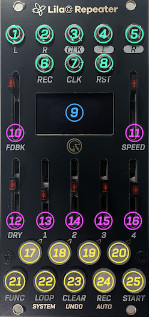
| 番号 | 名前 | 説明 |
|---|---|---|
| 1 | L入力 | オーディオのL ch入力。 |
| 2 | R入力 | オーディオのR ch入力。未接続時はL ch入力が内部結線。 |
| 3 | CLK出力 | 同期クロックパルス出力(0/5V)。 |
| 4 | L出力 | オーディオのL ch出力。 |
| 5 | R出力 | オーディオのR ch出力。 |
| 6 | REC入力 | 録音トリガー入力。トリガーパルス入力時、録音および録音終了をトリガーする。 |
| 7 | CLK入力 | 同期クロックパルス入力。 |
| 8 | RST入力 | 再生位置のリセットパルス入力。 |
| 9 | OLEDディスプレイ | 128x64の白OLEDディスプレイ。各種情報表示を行う。 |
| 10 | FDBKフェーダ | オーバーダブ時の過去録音サンプルのミックス率を設定する。 |
| 11 | SPEEDフェーダ | 再生スピードを60-240BPMの間で設定する。外部同期時は無効化。 |
| 12 | DRYフェーダ | 入力オーディオ兼録音入力のレベルを設定する。 |
| 13 | T1フェーダ | トラック1の再生レベルを設定する。 |
| 14 | T2フェーダ | トラック2の再生レベルを設定する。 |
| 15 | T3フェーダ | トラック3の再生レベルを設定する。 |
| 16 | T4フェーダ | トラック4の再生レベルを設定する。 |
| 17 | T1ボタン | トラック1の録音ターゲット指定や、モードごとの操作を行う。 |
| 18 | T2ボタン | トラック2の録音ターゲット指定や、モードごとの操作を行う。 |
| 19 | T3ボタン | トラック3の録音ターゲット指定や、モードごとの操作を行う。 |
| 20 | T4ボタン | トラック4の録音ターゲット指定や、モードごとの操作を行う。 |
| 21 | FUNCボタン | 他のボタンと組み合わせてサブ機能を実行する。ダブルタップで通常モード復帰。ボタン下の金色文字(SYSTEM / UNDO / AUTO)は、FUNCと組み合わせて押したときの、そのボタンのサブ機能を表します。 |
| 22 | LOOPボタン | ループセット選択画面に遷移する。 |
| 23 | CLEARボタン | 他のボタンと組み合わせてトラック個別やループセット全体のクリア操作を行う。 |
| 24 | RECボタン | 録音/オーバーダブの開始/停止。 |
| 25 | STARTボタン | 全トラック再生開始/停止。 |
2-2. バック
! 注意: 電源および拡張コネクタの極性に注意してください。ケーブルの赤いラインとシルクスクリーンの白い線の方向を一致させてください。極性を間違えると故障の原因になります。
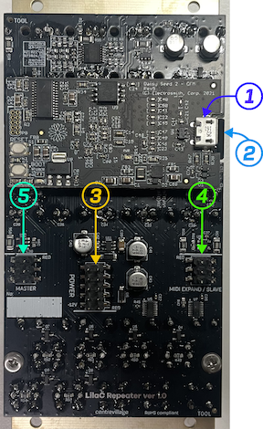
| 番号 | 名前 | 説明 |
|---|---|---|
| 1 | USBコネクタ(on Daisy Seed DFM2) | ファームウェアアップデートに利用できるUSBコネクタ。 |
| 2 | マイクロSDカードスロット | ファームウェアアップデートやサンプルインポート、ループセット保存に使うSDカード用スロット。出荷時はSDカードを挿入済み。 |
| 3 | 電源コネクタ | 10pinの電源コネクタ。シルクスクリーンの白い線の方向とケーブルの赤いラインの方向を合わせる。 |
| 4 | MIDI EXPAND/SLAVEコネクタ | 6pinのコネクタ。MIDI拡張モジュールの接続、またはUARTチェインの入力(上流からの受信)に使う。シルクスクリーンの白い線の方向とケーブルの赤いラインの方向を合わせる。 |
| 5 | MASTERコネクタ | 6pinのコネクタ。UARTチェインの出力(下流への送信)に使う。シルクスクリーンの白い線の方向とケーブルの赤いラインの方向を合わせる。 |
3. クイックスタート
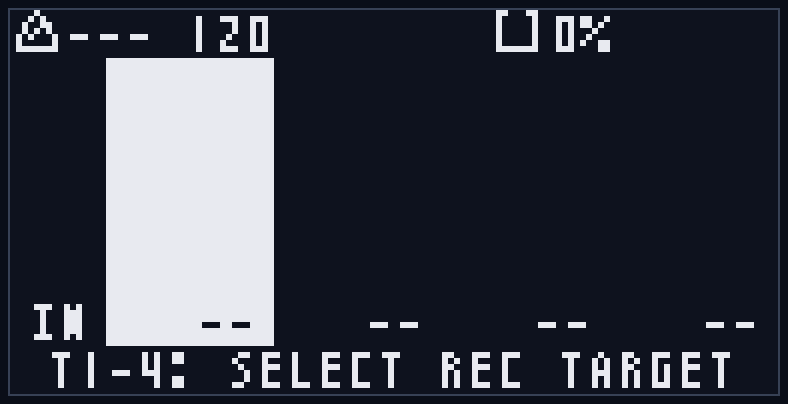
電源を入れると、タイトル画面(スプラッシュスクリーン)とバージョン番号が約2秒間表示され、続いて画面が花びらに分かれて風に流れるアニメーション(約3秒)の後、通常モードへ移行します(この間もSDカードの読み込みなどはバックグラウンドで進行します)。
起動直後は通常モードになっています。
T1ボタンが赤く点灯し、通常モード画面のトラック1が反転表示されていることを確認してください。
L/R入力に音の出るモジュールの出力を繋ぎ、DRYフェーダを少し上げて、画面の左端のINの文字の上にレベルバーが表示されることを確認します(INメータはDRYフェーダを通した後のレベルを表示します)。
L/R出力をミキサーか、外部出力インタフェースモジュールに繋ぎます。
外部クロックに同期したい場合は、CLK入力にクロックを入力します。
3-1. 最初のループを録音する
まず、DRYフェーダで入力レベルを調整します。
次にRECボタンを押すと録音開始します。
このとき、RECボタンが赤く点灯し、録音時ポップアップが表示されます。
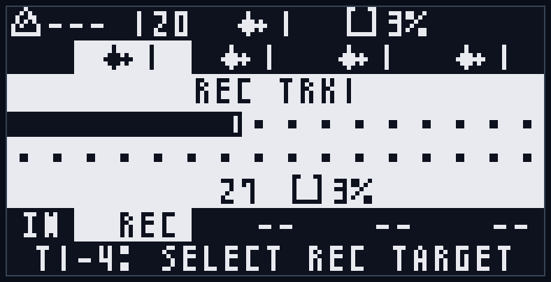
このポップアップが操作の邪魔になる場合は、FUNCボタンの単押しで閉じられます(録音は続きます)。
RECボタンをもう一度押すと録音停止し、自動的に再生状態になります。
このとき、STARTボタンが緑色に点灯します。
T1フェーダを操作すると、ループ再生のボリュームを調整できます。
3-2. 他のトラックを録音する
T2ボタンを押すと、T1ボタンが消灯し、T2ボタンが赤く点灯します。
これで録音ターゲットがトラック2に変更されました。
RECボタンを押すとトラック2へ録音開始し、もう一度押すと録音を終了します。
T2フェーダを操作すると、ループ再生のボリュームを調整できます。
3-3. オーバーダブで重ね録り
さらにトラック1か2を録音ターゲットにした状態で、RECボタンを押すと、オーバーダブが開始されます。
このときオーバーダブのポップアップ表示が行われます。
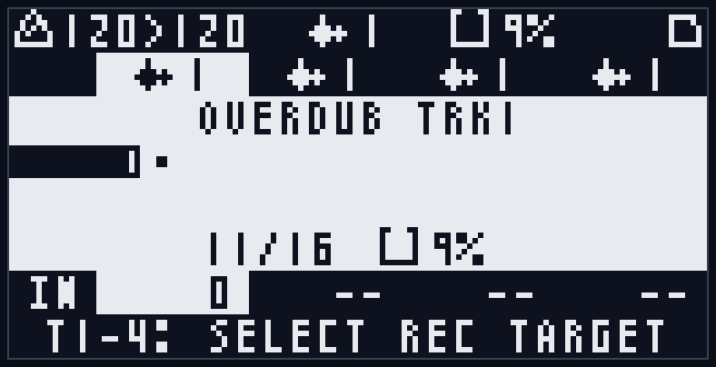
オーバーダブ時の過去録音のレベルはFDBKフェーダで調整することができます。
オーバーダブ継続中は、先頭からループしてオーバーダブを続けます(*1)。
再度RECボタンを押すとオーバーダブを停止します。
*1 FDBKを少し下げた状態でオーバーダブし続けることで、ディレイエフェクトのように徐々に過去の音を減衰させる効果が得られます。
3-4. やり直す
本機はトラック単位の一段階Undoに対応しています。
録音済みのトラックのT1-T4ボタンを押して、録音ターゲットに設定後、FUNC+CLEARボタンを押すことで前回の録音/オーバーダブ状態に戻すことができます。
再度FUNC+CLEARを押すとRedoが行われ、最新の録音/オーバーダブ状態に戻ります。
トラックの録音自体をやり直したい場合は、CLEARボタンを押しながらT1-T4ボタンを押すと、対応するトラックの録音がクリアされます。
クリア直後は、FUNC+CLEARで最新の録音/オーバーダブ状態に戻ることも可能です。
全てのトラックをクリアしたい場合は、CLEARボタンを押しながらLOOPボタンを押してください。
確認ポップアップが表示されるので、T3ボタンを押せば全トラックの録音が消去されます。
クリアをやめたい場合はT4ボタンを押すとキャンセルできます。
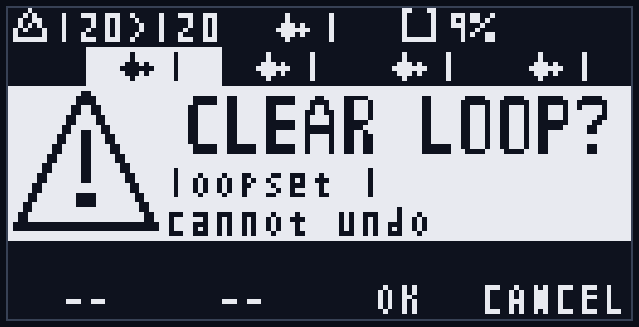
3-5. エフェクトをかけてみる (ver 2)
ver2では、トラックごとにエフェクト(FX)をかけられます。ここでは録音済みのトラック1にフィルタをかけてみます。
- FUNC+T1でトラック編集モードに入ります。
- T1ボタンとT2ボタンを同時に押します。画面がFXページに切り替わり、最上段に "TAPE FX" と表示されます(もう一度T1+T2を同時に押すと元の画面に戻ります)。
- カーソルが最上段(カテゴリヘッダ)にある状態でT4ボタンを2回押し、"FILTER FX" カテゴリに切り替えます。
- T2ボタンでカーソルを "FLT.ON" の行へ移動し、T4ボタンで "ON" にします。
- T2ボタンで "CUTOFF" の行へ移動し、T3ボタンを押し続けて値を下げていくと、音がこもっていきます(ローパスフィルタ)。
- 確認できたら、FUNCボタンをダブルタップして通常モードに戻ります。
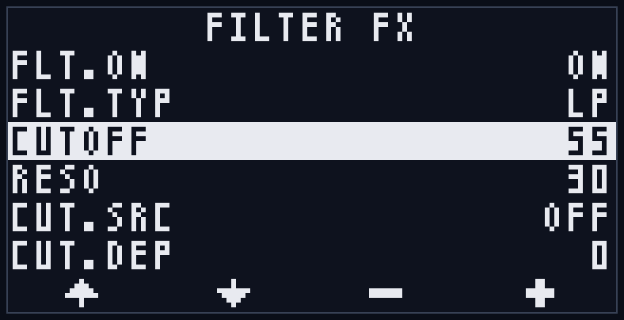
FXページはこの「T1+T2で切り替え → ヘッダでカテゴリを選択 → 項目で値を変更」という操作ですべてのエフェクトを編集できます(「7-2-2. FXページ」参照)。各エフェクトの内容は「9. エフェクト」を参照してください。
4. 機能コンセプト
4-1. トラック
4つのトラックが存在し、各トラックは以下の情報を持ちます:
- 録音済みサンプル
- Undoバッファ
- ベーステンポ(録音時のテンポ情報)
- 録音ステップ数
- 再生方向(順方向/逆方向)
- 再生スピード(x0.5/x1/x2)
- パンニング
- ループ範囲(録音サンプルのうち実際にループ再生する開始位置と範囲。サンプル自体は変更しません)
- 再生レベル(SDカード保存対象外、各トラックフェーダからリアルタイムに反映)
- シンクタイプ(VARI/STRETCH)とピッチ(±24半音) (ver 2)
- 録音ソース (ver 2)
- エフェクト(FX)設定 (ver 2)
一般的なマルチトラックルーパとは異なり、ステップ数や再生方向などの情報もトラック別に保持するため、ポリリズム的なパフォーマンスが可能です。
4-2. ステップ
4ppqn (拍ごとに4つ)のクロック単位をステップと呼びます。
再生/録音/ループセット切り替え/Undoなどは、このステップが進むタイミングで行われます。
4-3. ベーステンポ
トラックを録音した時のテンポ(BPM)です。
ループ録音後にテンポを変更すると、サンプル再生スピードがベーステンポと再生テンポの速度差で補正されます。
例えば、80BPMで録音後にテンポを160BPMにすると、サンプル再生スピードは2倍になります。
4-4. 録音ターゲットと編集ターゲット
トラックの選択状態には、「録音ターゲット」と「編集ターゲット」の2種類が存在します。
「録音ターゲット」は通常モードで選択でき、録音対象のトラックの指定、Undo対象トラックの指定に使われます。
一方、「編集ターゲット」はトラック編集モードにおける、編集対象となるトラックの指定に使われます。
また、トラック編集モードに入っている間は、Undo対象トラックは「録音ターゲット」ではなく「編集ターゲット」になります。
(「7-2. トラック編集モード」参照)
4-5. 再生パラメータ
各トラックの再生情報です。
- 再生レベル(SDカード保存対象外、各トラックフェーダからリアルタイムに反映)
- 再生方向(順方向/逆方向)
- 再生速度(x0.5/x1/x2。シンクタイプがVARIのとき有効)
- ピッチ(±24半音。シンクタイプがSTRETCHのとき有効) (ver 2)
- パン
- ステップコントロール(STEP)
- ループ範囲(録音サンプルのうち実際にループ再生する範囲)
- シンクタイプ(VARI/STRETCH) (ver 2)
- 録音ソース (ver 2)
再生レベル以外はSDカードに自動保存されます。
各パラメータはトラック編集モードで編集できます(「7-2. トラック編集モード」参照)。
シンクタイプとピッチは「8. ピッチとタイムストレッチ」、録音ソースは「4-11. 録音ソース」を参照してください。
4-6. ループセット
全4トラックの録音状態(Undoバッファ含む)と再生情報は、ループセットという単位で扱われます。ループセットは1〜128の番号を持ちます。
ループセットを切り替えることで、全トラックのループを一括で切り替えることができます(LOOPボタン。「7-3. ループセット選択モード」参照)。
さらに本機では、トラックごとに独立して別のループセットへ切り替えることもできます(LOOP+T1-4)。これにより、トラック1だけ別のフレーズに差し替える、といったパフォーマンスが可能です。
- ベースループセット: 全トラックが同じループセット番号にそろっているときの、その共通の番号です。通常モードのヘッダ中央(波形アイコン+番号)に表示されます。LOOP単押しのループセット選択は、このベース(=全トラック)をまとめて切り替えます。
- トラックループセット: 各トラックが個別に属するループセットです。LOOP+T1-4で対象トラックだけを別のループセットへ切り替えると、そのトラックだけがほかのトラックと違う番号になります。
トラックが1つでも別の番号になっているときは、全トラック共通の番号が決まらないため、ヘッダの表示は "--" になります。各トラックの現在のループセット番号は、通常モードのトラック列の上部(1ページ目)に常に表示されます(「7-1. 通常モード」参照)。トラックの番号がバラバラになっても、再度LOOP単押しで全トラックを同じ番号へそろえれば、元のように一括で扱えます。
トラックごとのループセット設定はSDカードに保存され、次回起動時にも復元されます。
4-7. DRY/FDBKと録音レベルの関係
DRYレベルは入力レベルだけでなく、録音レベルとしても機能します。
また、FDBKレベルは初回録音では機能せず、オーバーダブ時に前回録音の減衰率として機能します。
4-8. クロック同期
内部クロックによる同期の他に、クロック入力とMIDI入力による同期に対応しています。
ただし、MIDI入力による同期には別売のMIDI拡張モジュール(MIDI CoM+)が必要です。
(「10. クロック同期とMIDI」参照)
4-9. 自動バックアップ
ループセットへの変更は、Undoバッファも含め、SDカードに自動的に保存されます。
次回起動時には、SDカードから、最後に選択されたループセットの情報が自動的に読み込まれます。
(「11. SDカード保存」参照)
4-10. エフェクトの考え方 (ver 2)
各トラックは独立したエフェクト(FX)を持ちます。エフェクトは再生時にリアルタイム適用され、録音サンプル自体は変更されません。
- エフェクトの種類と接続順は固定です(「9-1. シグナルチェーンと共通ルール」参照)
- 設定は各トラックのループごとにSDカードへ自動保存されます(再生パラメータと同じ保存単位)
- FX設定はUndoの対象外です(Undoが戻すのは録音サンプルのみ)。トラックをクリアすると初期値に戻ります
- エフェクトがかかった音を録音データとして確定(固定)したいときは、録音ソースを使ってリサンプルします(「4-11」参照)
操作は「7-2-2. FXページ」、各エフェクトの詳細は「9. エフェクト」を参照してください。
4-11. 録音ソース (リサンプル) (ver 2)
録音時に「何を録るか」をトラックごとに選べます(トラック編集モードのREC項目。「7-2-1」参照)。初期値はDRY(入力音)で、ver1と同じ動作です。
- DRY: 入力音(DRYフェーダ適用後)
- D_L / D_R: 入力音の左/右チャンネルだけを両チャンネルに複製して録音(モノラル音源向け)
- TRK: 全トラックの再生ミックス(エフェクト・レベル・パン適用後)
- ALL: TRK+入力音
- SLF: 自トラックの出力(エフェクト・レベル・パン適用後)。オーバーダブ時のみ有効で、新規録音ではDRYと同じ
TRK/ALL/SLFを使うと、エフェクトやピッチを適用した再生音を録音データに焼き込む「リサンプル」ができます。
- 別トラックへのリサンプル: 固めたいトラックだけを再生した状態で、空きトラックにTRKで録音します
- その場バウンス: SLFを選び、FDBKフェーダを0まで下げてオーバーダブすると、自トラックのエフェクト込みの音がそのトラック自体に焼き込まれます(直前のテイクはUndoで戻せます)
リサンプル後もエフェクト設定はそのまま残ります(自動でOFFにはなりません)。焼き込んだ音に同じエフェクトが二重にかかるのが望ましくない場合は、リサンプル後にFXを手動でOFFにしてください。TRK/ALL/SLFはトラックのレベルフェーダとパンを通った後の音を録るため、フェーダ位置がそのまま録音レベルに影響することにも注意してください。
5. UIコンセプト
5-1. ボタン
T1、T2、T3、T4ボタンはモードごとに機能が切り替わります。
FUNC、LOOP、CLEAR、REC、STARTボタンは各モード共通の操作ですが、モードによっては操作禁止となるものがあります。
(「7. 各モード詳細」参照)
5-2. レベルフェーダ
FDBK、SPEED、DRY、T1、T2、T3、T4すべてのフェーダがモード共通で利用できます。
ただし、外部同期時はSPEEDフェーダは無効化されます。
再生中は、SPEEDフェーダのLEDが拍の周期で明滅します。拍頭で最も明るく光り、拍の終わりに向かって徐々に暗くなる動きで、現在のテンポと拍のタイミングが目で分かり、録音を始める拍位置の手がかりになります。この明滅は内部クロック・外部同期のどちらでも拍位相に同期します(外部同期でSPEEDフェーダ自体が無効でも明滅は行われます)。停止中はLEDが点灯したままになります。
5-3. トランスポート入出力(CLK/RST/REC IN, CLK OUT)
CLKは外部クロック同期用、RSTは再生位置リセットです。
RECは録音トリガーで、RECボタン押下と同じ機能を持っています。
内部同期でも外部同期でも、再生中はCLK出力からクロックパルスが出力されます。
停止中はクロックパルスの出力も停止します。
システム設定の「CLK IN Start」をONにすると、CLK入力から外部クロックを受信し始めたとき(クロックが2秒以上途切れた後の最初のパルス)に自動的に再生が開始されます。クロックが続いている間に手動で停止した場合、再生が勝手に再開されることはありません(初期値OFF。「7-4. システム設定モード」参照)。
5-4. 画面構成
どのモードでも、共通で右上にステータスバッジの表示が行われます。
(「Appendix C」参照)
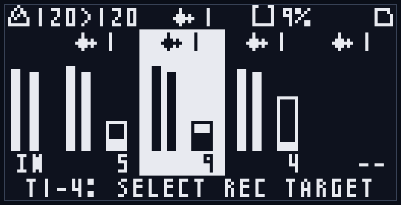
また、録音中などには専用のポップアップが表示されます。
このポップアップ表示中にFUNCボタンを単押しすると、ポップアップを閉じて画面を確認できます(録音/オーバーダブ自体は継続します)。一度閉じた後は、次に録音/オーバーダブを開始するまで閉じたままになります。
何かエラーが発生した時や、特別な情報通知では情報や警告のポップアップが表示されます。
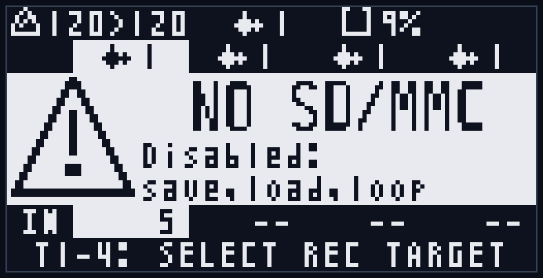
詳細は、「6. モード共通操作」や「7. 各モード詳細」を参照してください。
カテゴリページの共通操作 (ver 2)
ver 2 で追加されたFXページ(「7-2-2」参照)とシステム設定モード(「7-4」参照)は、設定項目を「カテゴリ」に分けて表示する共通の画面構成を持ちます。操作の文法はどちらも同じです。
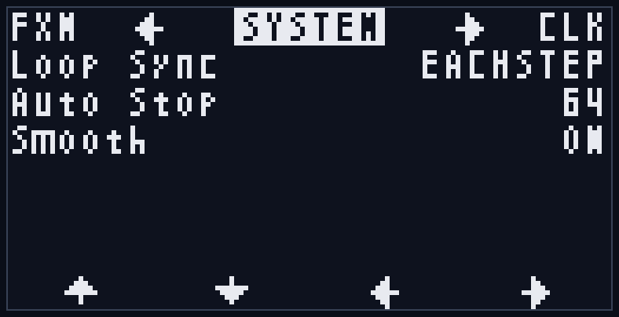
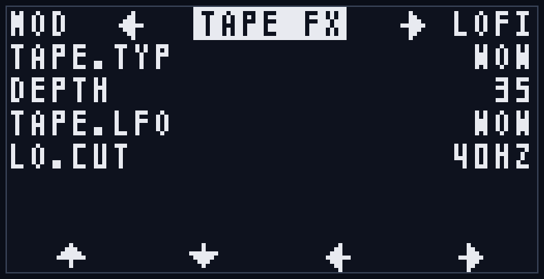
- 画面の最上段はカテゴリヘッダです。現在のカテゴリ名が中央に表示されます。
- T1/T2ボタンでカーソルを上下に移動します。カーソルはヘッダ→項目1→…→最終項目→ヘッダの順に循環します(ヘッダからT1を押すと同じカテゴリの最終項目へ回り込みます)。
- カーソルがヘッダにあるときは、◀▶マークと左右の隣のカテゴリの略名が表示され、T3/T4でカテゴリを切り替えます(端まで行くと反対側へループします)。
- カーソルが項目にあるときは、T3/T4で値を変更します(−/+)。
- 最下段のフッタの表示も、カーソル位置に応じて ◀▶(カテゴリ切替)と −+(値変更)が切り替わります。
別のカテゴリの項目へ移動するときは、いったんヘッダに戻ってカテゴリを切り替えてから項目へ下りる、という操作になります。
6. モード共通操作
6-1. 録音と再生
6-1-1. 録音
録音は、選択中の録音ターゲット(通常モードでT1-T4ボタンにより指定)に対して行われます。
RECボタンを押すと録音が開始し、もう一度押すと録音停止します。REC入力にトリガーパルスを入力しても同じ動作です。
録音中はRECボタンが赤く点灯し、録音ポップアップが表示されます。
ポップアップにはトラック番号(REC TRKn)、録音長を示す拍マーク、録音済みステップ数、メモリ使用率(水タンクアイコン+%)が表示されます。ステップ数とメモリ使用率は下段に左右に並んで表示され、録音中はステップ数がリアルタイムにカウントアップします。
録音レベルはDRYフェーダで設定します(「4-7. DRY/FDBKと録音レベルの関係」参照)。
トラックの録音ソース(「4-11」参照)がDRY以外に設定されている場合は、入力音の代わりに選択したソース(トラックのミックスなど)が録音されます。TRK/ALL/SLFのトラック分の録音レベルは、DRYフェーダではなく各トラックのレベルフェーダとパンで決まります。
録音を停止すると、自動的に再生状態に移行します(STARTボタンが緑色に点灯)。
停止状態から録音(またはオーバーダブ)を開始すると、その開始と同時にトランスポート全体が再生を始めます。対象トラックは録音/オーバーダブされ、すでに録音済みの他のトラックはそれぞれの先頭から同時に再生を始めます(STARTを押したときと同じ挙動)。これにより既存のループに重ねて録音でき、録音を停止したあともそのまま全トラックの再生が続きます。
また、録音中にSTARTボタンを押すと、その場で録音を停止し、そのまま同じトラックのオーバーダブへ移行します。
再生中・クロック動作中に録音を開始した場合、録音開始のタイミングはLoop Sync設定に従って揃えられます(Loop Syncは録音/オーバーダブの開始などをクロックに合わせるための設定です。「7-4. システム設定モード」参照)。録音停止は即座に行われます。
なお、すでに録音済みのトラックを録音ターゲットにした状態でRECを押すと、録音ではなくオーバーダブが開始されます(「6-2. オーバーダブ」参照)。
* 起動直後やループセット切り替え直後は、Undo用データの読み込み中("SYNCING")のため録音を開始できないことがあります。表示が消えてから操作してください。
6-1-2. 再生/停止
STARTボタンを押すと、全トラックの再生を開始/停止します。再生中はSTARTボタンが緑色に点灯します。
再生中はCLK出力から同期クロックパルスが出力され、停止すると出力も止まります(「5-3. トランスポート入出力」参照)。
各トラックは個別の録音長・再生方向・再生速度を持つため、再生中はそれぞれの長さでループします(「4-1. トラック」参照)。
停止からの再生開始は、常に各トラックのループ先頭(逆再生のトラックは末尾)からです。停止した位置からの続き再生はありません。
内部クロック同期時は、STARTを押した瞬間がクロックの起点になります。
外部クロック同期時は、再生開始が次のステップ境界に揃えられます。
6-1-3. オートストップ録音
通常の録音は手動で停止しますが、FUNC+RECで録音を開始すると、あらかじめ決めたステップ数に達した時点で自動的に録音停止します。
停止するステップ数は、システム設定の「Auto Stop」で1〜128ステップの範囲で設定できます(初期値64ステップ=16拍、最大128ステップ=32拍。「7-4. システム設定モード」参照)。
録音中ポップアップには、自動停止する位置が縦棒で表示されます。
すでに通常RECで録音しているときにFUNC+RECを押すと、その時点以降の区切りのよいタイミングで録音停止が予約されます。
停止するタイミングは、Loop SyncがEACHSTEPのときは次の16ステップ(4拍)の区切り、ANY END / T1 ENDのときはその設定の区切りになります(「7-4. システム設定モード」参照)。
ここでの「予約」とは、操作をその場ですぐ実行するのではなく、Loop Sync設定で決めたクロックの区切りまで待ってから実行することを指します。再生中に行う録音/オーバーダブの開始、Undo、ループセット切り替えなどに共通する考え方です(本マニュアルでは以降も「予約」と呼びます)。
6-2. オーバーダブ
6-2-1. オーバーダブ開始/停止
録音済みのトラックを録音ターゲットにした状態でRECボタンを押すと、オーバーダブが開始されます。
オーバーダブ中はRECボタンが赤く点灯し、オーバーダブポップアップ(OVERDUB TRKn)が表示されます。
ポップアップ下段には、オーバーダブ済みステップ数とループ長が「録音済み/全体」の形式(例: 123/256)で表示され、ループを一周するとその値で固定されます。
オーバーダブ中は、過去の録音を再生しながら入力音を重ねて録音し、ループ末尾に達すると先頭に戻ってオーバーダブを継続します。ループ範囲を設定している場合、オーバーダブはループ範囲内のみに行われます(「7-2. トラック編集モード」参照)。
過去録音のミックス率(減衰率)はFDBKフェーダで設定します(「4-7. DRY/FDBKと録音レベルの関係」参照)。FDBKを下げた状態で重ね続けると、ディレイのように過去の音が徐々に減衰します。
再度RECボタンを押すとオーバーダブを停止します。停止は即座に行われます。
また、録音中にSTARTボタンを押した場合も、録音を停止してそのままオーバーダブに移行します(「6-1-1. 録音」参照)。
! 補足 (ver 2): シンクタイプがSTRETCHのトラックはオーバーダブできません("OD BLOCKED / stretch track: bounce first" の警告が表示されます)。新規録音は可能です。オーバーダブしたい場合は、別トラックに録音ソースTRK or ALLで録音(リサンプル。「4-11」参照)するか、シンクタイプをVARIに戻してください(「8-4. 制約と使いどころ」参照)。STRETCHトラックの場合、録音中のSTARTボタンによるオーバーダブへの自動移行は無効化され、録音停止操作に変わります。
6-2-2. オートストップオーバーダブ
FUNC+RECで録音済みトラックのオーバーダブを開始すると、ループ一周分のオーバーダブを行った時点で自動的に停止します(ループ範囲を設定している場合は、ループ範囲一周分で停止します)。
通常RECで開始したオーバーダブの途中でFUNC+RECを押した場合は、次の16ステップ(4拍)ごとの区切り、またはループ一周のいずれか早いタイミングで停止します。
6-3. Undo/クリア操作
6-3-1. トラック録音のUndo/Redo
本機はトラック単位で一段階のUndo/Redoに対応しています。
FUNC+CLEARボタンを押すと、対象トラックを前回の録音/オーバーダブ状態に戻します(Undo)。もう一度FUNC+CLEARを押すと、最新の状態に戻ります(Redo)。
Undo/Redoの対象は録音サンプルのみです。再生パラメータ(ピッチ・シンクタイプ・録音ソースを含む)とFX設定はUndoの対象外で、Undoしても変化しません(「4-5」「4-10」参照)。
Undoの対象トラックは、通常モードでは録音ターゲット、トラック編集モードでは編集ターゲットになります(「4-4. 録音ターゲットと編集ターゲット」参照)。
再生中のUndo/Redoはステップ境界に揃えて適用され、停止中は即座に適用されます。
次の状態ではUndoは行えず、"UNDO BLOCKED" の警告が表示されます:
- 録音/オーバーダブ中
- Undo用データの同期中(画面右上に読み込み中バッジが表示されている間)
- ループセット選択モード中(選択専用のため)
表示が消えてから操作してください(「Appendix D」「Appendix E-6」参照)。
6-3-2. トラックのクリア
CLEARボタンを押しながらT1-T4ボタンを押すと、対応するトラックの録音が即座にクリアされます。
クリアが実行されると、画面中央に "CLEAR TRKn"(nはトラック番号)が約1秒間表示されます(「Appendix C-2」参照)。
クリア直後は、そのトラックを録音ターゲット(トラック編集モードでは編集ターゲット)にした状態でFUNC+CLEARを押すと、クリア前の録音状態に戻すことができます(「6-3-1」参照)。
なお、Undo用データの同期中は"SYNCING"が表示され、クリアは行えません(同期完了後に操作し直してください)。
ループセット選択モードではトラックの個別クリアはできません("CLEAR BLOCKED / loop select"。「Appendix D」参照)。
6-3-3. ループセットのクリア
CLEARボタンを押しながらLOOPボタンを押すと、全トラック(Undoデータを含む)を一括でクリアします。各トラックはそれぞれが現在属しているループセットを空にします。トラックごとに番号が違っていても、各トラックは自分のループセットに留まったままクリアされます(「4-6. ループセット」参照)。
誤操作防止のため確認ポップアップ("CLEAR LOOP?")が表示されます。T3ボタンを押すと実行、T4ボタンを押すとキャンセルされます。ポップアップ中段には対象が表示され、全トラックがそろっているときは "loopset N"(Nはループセット番号)、トラックごとに番号が違うときは "all tracks" と表示されます。
この操作はトラックの個別クリアと異なり、Undoで元に戻すことはできません。SDカード上の保存データも削除され、各トラックは未録音(NEW)の状態に戻ります。
次の場合はクリアできず、対応する警告が表示されます:
- SDカードが使えない("CLEAR BLOCKED / No SD")
- 録音/オーバーダブ中("CLEAR BLOCKED / Recording...")
- Undoデータの同期中("SYNCING")
- 保存/読み込み/スキャンなどの処理中("CLEAR BLOCKED / Busy...")
- ループセット選択モード中("CLEAR BLOCKED / loop select")
(「Appendix D」参照)
6-4. リセット操作
再生位置をループ先頭に戻す操作です。
FUNC+STARTボタンを押すと、全トラックの再生位置がループ先頭にリセットされます。RST入力にトリガーを入力しても同じ動作です。
リセットは再生中のステップ境界に揃えて適用されます。
RST入力をゲートとしてHIGHに保持し続けている間は、再生位置が先頭に固定されます(「5-3. トランスポート入出力」参照)。
また、MIDI START受信時にも、再生位置のリセットと再生開始が行われます(「10. クロック同期とMIDI」参照)。
6-5. 各モードへの遷移
起動直後は通常モードになっています。
以下の操作で他のモードに移動できます。
| 操作 | 遷移先のモード |
|---|---|
| FUNC+T1/T2/T3/T4 | 押したトラックボタン(T1-4)に対応するトラックを編集ターゲットにして、トラック編集モードに遷移。 |
| FUNCx2 (ダブルタップ) | 通常モード |
| LOOP | ループセット選択モード(ベース=全トラック) |
| LOOP+T1/T2/T3/T4 | 押したトラックのトラックループセット選択モードに遷移(そのトラックだけを切り替え。「7-3」参照) |
| FUNC+LOOP | システム設定モード |
* 「A+B」の記述は「Aボタンを押しながらBボタンを押す」の意味
* LOOP単押しはボタンを離したタイミングで判定されるため、LOOPを押したまま続けてT1-4を押すとトラックループセット選択になります。
また通常モード以外は、そのモードに遷移したときと同じ操作を繰り返すことで通常モードに戻ります。
通常モード復帰操作:
- トラック編集モード: FUNC+編集ターゲットトラックのT1-4ボタン
- ループセット選択モード(ベース/トラックループセットとも): LOOPボタンを再度押す
- システム設定モード: FUNC+LOOPボタンを再度押す
- 全モード共通: FUNCボタンをダブルタップ
7. 各モード詳細
各モードは、共通操作(「6. モード共通操作」)に加えて、そのモード固有のT1-T4ボタンの機能と画面表示を持ちます。
モード間の遷移操作は「6-5. 各モードへの遷移」を参照してください。
7-1. 通常モード
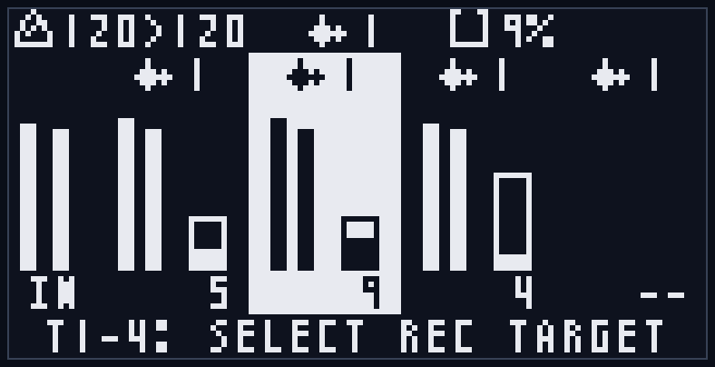
起動直後のモードで、録音ターゲットの選択を行う基本画面です。
T1-T4ボタンを単独で押すと、録音ターゲットを対応するトラックに切り替えます。選択中のトラックはボタンが赤く点灯し、画面上でも対応するトラック列が反転表示されます(録音/オーバーダブ中はターゲットの切り替えはできません)。
録音(REC)、再生(START)、オーバーダブ、オートストップ、Undo/クリア、リセットといった共通操作はすべてこのモードで利用できます(「6. モード共通操作」参照)。
画面構成:
- ヘッダ(最上段): テンポ表示(ベーステンポ>再生テンポのBPM)、中央にベースループセット(波形アイコン+番号。全トラックがそろっているときは共通番号、トラックごとに番号が違うときは "--"。「4-6. ループセット」参照)、メモリ使用率(水タンクアイコン+%)、右上の処理中バッジ
- トラックループセット行(1ページ目): 各トラック列の上部に、そのトラックが現在属しているループセット番号(波形アイコン+番号)を常に表示します。この行のぶん、入力/再生レベルメータとステップバーの高さは1ページ分低くなります
- 左端: 入力レベルメータ(L/R、"IN"表示)。DRYフェーダを通した後の、実際に録音・モニタされるレベルを表示します
- トラック列(4列): 各トラックの再生レベルメータ(L/R)、再生位置/状態(録音中は"REC"、再生中はステップ番号、逆再生時は"<"付き)、ループ範囲を基準にしたプログレスバー。バーの長さはループ範囲の長さ(Loop Length)を、バー内の塗りはループ範囲内での再生位置を表します。ステップ番号もループ範囲の先頭からの相対位置です(ループ範囲を設定していない場合は録音全体がそのままループ範囲になり、従来どおり録音全体に対する表示になります)。MIDIノートによるステップ操作中(「10-5. MIDIノートによるステップ操作」参照)は、これらの相対表示の基準が操作中の位置(ジャンプ先やスタッター範囲)に切り替わります
- フッタ: 操作ヒント("T1-4: SELECT REC TARGET")
各レベルメータは、実際に出力(モニタ)される音量を表示します。入力メータはDRYフェーダを通した後、各トラックのメータは再生レベルフェーダとパンを反映した後のレベルです。そのため、パンを左右どちらかに振ったトラックは、そのぶん片側のバーだけが振れます。また、バーがちらつかないよう、音が小さくなるとメータは少しゆっくり下がります。
LEDの点灯:
- T1-T4: 録音ターゲットのトラックが点灯
- REC: 録音ターゲットが録音/オーバーダブ中に点灯
- START: 再生中に点灯
7-2. トラック編集モード
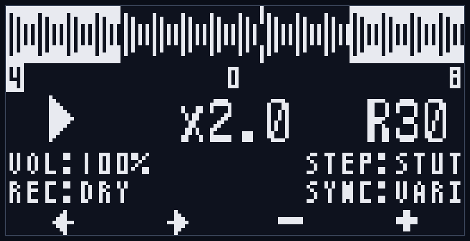
FUNC+T1-T4で対応するトラックを編集ターゲットにして遷移します。トラックごとの再生パラメータとエフェクト(FX)を編集するモードです。これらの設定はSDカードに自動保存されます(「4-5. 再生パラメータ」参照)。
このモードの画面は2つのページで構成されます:
- 再生パラメータページ(「7-2-1」): 再生方向・再生速度(ピッチ)・パン・ステップコントロール・録音ソース・シンクタイプ・ループ範囲
- FXページ(「7-2-2」): トラックにかけるエフェクトの設定
T1ボタンとT2ボタンの同時押しで、2つのページを交互に切り替えます。モードに入った直後は常に再生パラメータページです(FUNC+Tnで編集ターゲットを切り替えたときも再生パラメータページに戻ります)。
LEDの点灯(両ページ共通):
- 編集ターゲットのトラックが点滅
- 録音ターゲット(編集ターゲットと別の場合)は点灯
このモードでも録音・再生などの共通操作は利用できますが、録音対象はあくまで録音ターゲットです(編集ターゲットとは別に管理されます。「4-4. 録音ターゲットと編集ターゲット」参照)。
なお、トラック編集モードに入っている間は、Undo(FUNC+CLEAR)の対象トラックも編集ターゲットになります。
7-2-1. 再生パラメータページ
T1-T4ボタンの機能:
- T1/T2: 編集する項目を選択(←/→。再生方向→再生速度(ピッチ)→パン→ステップコントロール→録音ソース→シンクタイプ→Loop Start→Loop Lengthの順に移動)
- T3/T4: 値の変更(−/+。押し続けると連続変化。パン・ループ範囲(Loop Start/Loop Length)の項目では押し続けるとさらに速く変化します)
- T3とT4を同時に押すと、選択中の項目を初期値に戻します(ピッチ=0/パン=センター(C)/録音ソース=DRY/シンクタイプ=VARI/Loop Start=0/Loop Length=全体。再生方向・再生速度(VARI)・ステップコントロールには初期化動作はありません)
編集できる項目(8項目):
- 再生方向: 順方向(FWD、右向き三角)/逆方向(REV、左向き三角)
- 再生速度/ピッチ: シンクタイプによって、同じ場所の項目の意味が切り替わります(「8. ピッチとタイムストレッチ」参照)
- VARIのとき: 再生速度 x0.5 / x1.0 / x2.0
- STRETCHのとき: ピッチ −24〜+24(半音)。表示は "+12" のように正の値に+が付き、0は "0" です
- 再生速度とピッチの設定値は独立に保持されるため、シンクタイプを切り替えても互いの値は失われません
- パン: C(センター)/ L1〜L100 / R1〜R100
- ステップコントロール(STEP): ONE / -- / LOOP / STUT の4値(初期値 STUT)。外部MIDIキーボードのノートで、そのトラックの再生位置を操作する機能の動作を選ぶ項目です(-- はこの機能を使わない=無効)。各値の具体的な挙動と使い方は「10-5. MIDIノートによるステップ操作」を参照してください。初期値のSTUTを含め、どの値もトラックにMIDIチャンネルを割り当てて対応するノートを受け取ったときにだけ働くため、MIDIを使わなければ通常のループ再生と変わりません。録音済みかつ録音/オーバーダブ中でないトラックでのみ変更できます。
- 録音ソース(REC) (ver 2): DRY / D_L / D_R / TRK / ALL / SLF の6値(初期値 DRY)。このトラックへ録音するときのソースを選びます(「4-11. 録音ソース」参照)
- シンクタイプ(SYNC) (ver 2): VARI / STRC の2値(初期値 VARI)。トラックのクロック追従方式を選びます。VARI=バリスピード(テンポに合わせて再生速度が変わり、ピッチも連動)、STRC=タイムストレッチ(長さはテンポに追従したまま、ピッチだけ独立して変更可能)。詳細は「8. ピッチとタイムストレッチ」を参照してください。録音/オーバーダブ中は変更できません
- ループ範囲: 録音サンプルのうち実際にループ再生する範囲。中段のステップタイムラインで、左の数値=Loop Start(開始ステップ)、右の数値=Loop Length(長さ・ステップ数)を編集します。ループ範囲は録音末尾を跨いで巻き戻ることもできます(例: Loop Start=1・Loop Length=16のとき、末尾→先頭→開始位置と回り込んでループ)。録音済みかつ録音/オーバーダブ中でないトラックでのみ編集できます。
画面構成:
- 上段: 録音サンプルの波形サムネイルと再生位置マーカー。ループ範囲を設定している場合、範囲外の部分が反転表示されます(ステップジャンプ中は反転範囲がジャンプ位置基準になります)
- 中段: ステップタイムライン(左=Loop Start(開始ステップ)、中央=現在のステップ(ループ範囲内相対)、右=Loop Length)。Loop Start/Loop Lengthを選択中は、その数値が反転表示されます。ステップジャンプ中は、左のLoop Startの右に ">ジャンプ先ステップ" が表示されます
- パラメータ行: 再生方向(三角)/ 再生速度またはピッチ / パン。選択中の項目は反転表示
- 下段1: 左にトラック音量(VOL:NN%、表示のみ。各トラックフェーダで変化)、右にステップコントロール(STEP:ONE/--/LOOP/STUT)
- 下段2 (ver 2): 左に録音ソース(REC:DRY〜REC:SLF)、右にシンクタイプ(SYNC:VARI/SYNC:STRC)
- フッタ: ←/→/−/+ のアイコン
反映タイミング: 再生方向・再生速度・ループ範囲・シンクタイプの変更は、再生中は次のステップ境界で反映されます。パン・ピッチ・録音ソースは即座に反映されます。
7-2-2. FXページ (ver 2)
再生パラメータページでT1+T2を同時に押すとFXページに切り替わります。編集ターゲットのトラックにかかるエフェクトを編集するページです(もう一度T1+T2で再生パラメータページへ戻ります)。
FXページは6つのカテゴリで構成され、「5-4. 画面構成」で説明したカテゴリページの共通文法で操作します:
- T1/T2: カーソル移動(ヘッダ⇄項目)
- ヘッダにカーソルがあるとき T3/T4: カテゴリ切替
- 項目にカーソルがあるとき T3/T4: 値の変更(−/+。連続値の項目は押し続けると連続変化し、さらに押し続けると速くなります)
- T3+T4同時押し: 選択中のパラメータを初期値に戻します(ヘッダ上では何も起きません)
カテゴリと項目:
| カテゴリ | 項目 |
|---|---|
| TAPE FX | TAPE.TYP / DEPTH / TAPE.LFO / LO.CUT |
| LOFI FX | CRUSH / CRS.SRC / CRS.DEP |
| FILTER FX | FLT.ON / FLT.TYP / CUTOFF / RESO / CUT.SRC / CUT.DEP |
| DRIVE FX | DRV.TYP / DRV / DRV.SRC / DRV.DEP |
| LEVEL FX | LV.SRC / LV.DEP / PAN.SRC / PAN.DEP |
| MOD | LFO1.MD+LFO1.RT / LFO1.SHP / LFO2.MD+LFO2.RT / LFO2.SHP / EF.SRC |
各パラメータの意味は「9. エフェクト」を参照してください。
- FX設定は編集ターゲットのトラックのものです(画面にトラック番号は表示されません。点滅しているTnボタンで確認できます)
- 値の変更は即座に音へ反映されます
- MODカテゴリのLFOの行は、1行にモード(SYNC/FREE)とレートの2つの値が並び、カーソルはセル単位で移動します
- FX設定はループセットの一部としてSDカードに自動保存されます。Undoの対象外です(「4-10」参照)
7-3. ループセット選択モード
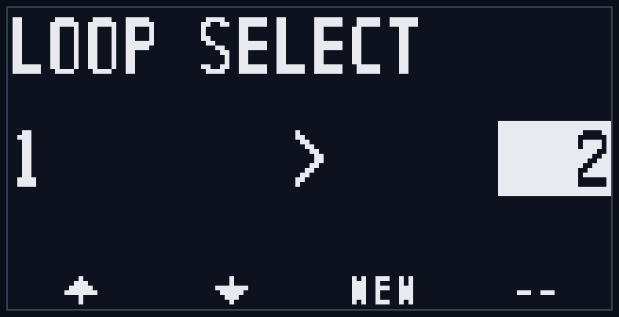
全トラックのループセット(1〜128)を切り替えるモードです。移動するときの操作によって、切り替わる対象(全トラックか、1トラックだけか)が変わります(「4-6. ループセット」参照):
- ベースループセット選択: LOOP単押しで遷移。全トラックを同時に同じループセットへ切り替えます。
- トラックループセット選択: LOOP+T1-4で遷移。押したトラックだけを別のループセットへ切り替えます(他のトラックはそのまま)。
どちらも画面構成と操作は共通で、タイトルと切り替えの対象範囲だけが異なります。録音・クリア・Undoなどの編集操作はできません(「Appendix D」参照)。
ループセットの切り替えには、まずLOAD操作で対象のループセットを読み込む必要があります。
読み込み完了後にT3ボタンを押すとループセットの切り替えが実行されます。
T1-T4ボタンの機能:
- T1/T2: 対象ループセット番号を選択(−/+。1〜128をループ)。押し続けると連続して変化します(約0.5秒後に自動送りが始まり、さらに押し続けると速くなります)
- T3: 対象ループセットの状態に応じて動作が変わります(下記)
- T4: 未使用
T3ボタンの動作(画面下とフッタのラベルに表示されます):
- LOAD: 録音済みの別ループセットを選んだとき。SDカードからの読み込みを開始します(プログレスバー表示)。読み込みが完了すると表示が「CHNG」に変わります。
- CHNG: 読み込み完了後にもう一度T3を押すと、ループセットを切り替えます。
- NEW: 未録音(空き)のループセットを選んだとき。新規ループセットとして即座に切り替えます。ベース選択では全トラックが空のとき、トラック選択ではそのトラックが空のときにNEWになります。
- --: 現在のループセットを選んでいるとき(切り替え対象なし)。
切り替えのタイミングは、停止中は即座に、再生中はLoop Sync設定に従ってクロックの区切りに揃えられます。切り替えが完了すると自動的に通常モードへ戻ります。
画面構成:
- タイトル: ベース選択は "LOOP SELECT"、トラック選択は "TRKn LOOP SELECT"(nは対象トラック番号)
- 中央: 現在のループセット番号 > 対象ループセット番号(対象は反転枠で表示)。ベース選択で各トラックの番号がそろっていないときは、現在の番号が "--" と表示されます
- 状態表示: 読み込み進捗バー / "PRESS 3 TO CHANGE!" / 切り替え中アニメーション / "SAVING..."(保存待ち)
- フッタ: ↑/↓(T1/T2)、T3ラベル(LOAD/NEW/CHNG/--、CHNGは点滅)
トラックループセット選択の画面例(対象がトラック1の場合):
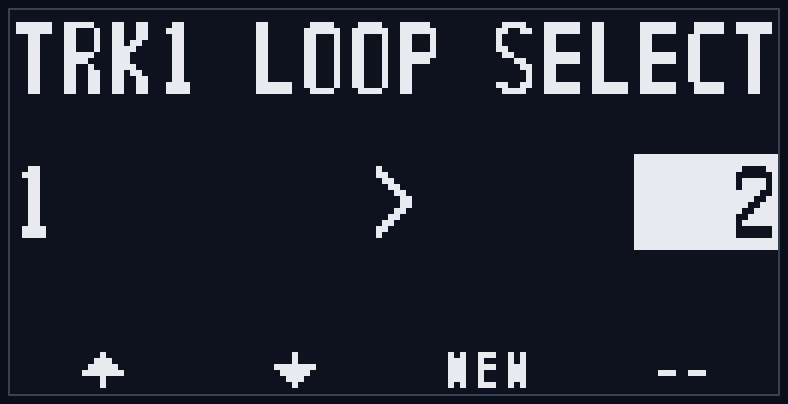
このモードでは、再生/停止(START)、再生位置リセット(FUNC+START)、トラック編集モードへの遷移(FUNC+Tn)は可能です。
読み込み中や切り替え確定後は、操作が制限されます(「Appendix D」参照)。
なお、読み込んだループセットに破損トラックが含まれていた場合は "DATA BROKEN" の警告が表示されます(「Appendix E-2」参照)。
! 補足: トラックループセット選択への移動は、対象トラック自身が録音/オーバーダブ中のときにできません("LOOP BLOCKED / Recording...")。別のトラック(録音ターゲット)が録音中でも、停止している他トラックのトラックループセット選択は可能です。ベースループセット選択(LOOP単押し)は従来どおり、録音ターゲットが録音/オーバーダブ中だとできません。
! 補足: 別のトラックが録音中のままトラックループセット選択に入っているときは、その録音をRECボタン(または外部REC入力/MIDI)で停止できます(選択操作には影響しません)。この間、START単押しは無反応です(録音を誤ってオーバーダブへ移行させないため。通常モードでの「録音中STARTでオーバーダブへ移行」はこのモードでは行われません)。
7-4. システム設定モード
FUNC+LOOPで遷移します。本機全体の動作設定を行うモードです。設定はSDカードに自動保存され、次回起動時にも引き継がれます(「11. SDカード保存」参照)。
ver2では、設定項目は6つのカテゴリ(SYSTEM / CLOCK / MIDI CH / DISPLAY / PITCH / FX MACRO)に整理されました(ver1の2ページ構成とページ番号表示は廃止)。画面は「5-4. 画面構成」で説明したカテゴリページの共通文法で操作します。モードに入った直後は、カーソルはSYSTEMカテゴリのヘッダにあります。
T1-T4ボタンの機能:
- T1/T2: カーソル移動(ヘッダ⇄項目)
- ヘッダにカーソルがあるとき T3/T4: カテゴリ切替(SYSTEM→CLOCK→MIDI CH→DISPLAY→PITCH→FX MACRO→SYSTEM…の順にループ)
- 項目にカーソルがあるとき T3/T4: 値の変更(−/+)。Auto StopとBend Rangeは押し続けると連続変化し、さらに押し続けると速くなります。MIDIチャンネル・Scale・Rotの各項目も押し続けると連続変化します(加速なし。MIDIチャンネルは端の値("--" または 16)で止まります)
- T3+T4同時押し: Auto Stop=64 / Bend Range=12 に戻します(FX MACROカテゴリでの動作は「9-7. FXマクロ」参照。その他の項目では何も起きません)
SYSTEMカテゴリ
| 項目 | 値 | 説明 |
|---|---|---|
| Loop Sync | EACHSTEP / ANY END / T1 END | 再生中に予約される操作(録音/オーバーダブの開始、Undo、ループセット切り替えなど)を、どのタイミングでクロックに合わせて実行するかを決めます。EACHSTEP=各ステップ(最小単位)、ANY END=いずれかのトラックのループ末尾、T1 END=トラック1のループ末尾。初期値はEACHSTEP。 |
| Auto Stop | 1〜128ステップ | オートストップ録音(FUNC+REC)で自動停止するステップ数。初期値は64ステップ(=16拍)。T3/T4を押し続けると連続変化(さらに押し続けると加速)、T3+T4同時押しで中央値(64ステップ)に戻ります。(「6-1-3. オートストップ録音」参照) |
| Smooth | ON / OFF | ループの継ぎ目や録音/オーバーダブ停止時に短いクロスフェードをかけ、クリックノイズを抑える設定。初期値はON。 |
CLOCKカテゴリ
クロック同期まわりの設定です(ver1では1ページ目にあった項目+新設のCLK Delay)。
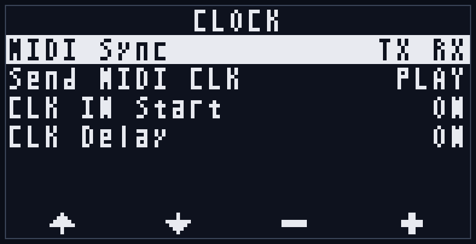
| 項目 | 値 | 説明 |
|---|---|---|
| MIDI Sync | TX RX / TX / RX / -- | MIDIクロックの送信(TX)/受信(RX)の有効・無効。別売のMIDI拡張モジュールが必要です。初期値はTX RX。(「10. クロック同期とMIDI」参照) |
| Send MIDI CLK | PLAY / ALWAYS | MIDIクロックを送信するタイミング。PLAY=再生中のみ送信(初期値)、ALWAYS=停止中も含め常時送信。外部機器を常に本機のテンポへ追従させたいときはALWAYS。(「10-3-2. MIDI送信」参照) |
| CLK IN Start | ON / OFF | CLK入力から外部クロックを受信したときに自動で再生を開始する設定。ON=クロック受信で自動再生、OFF=自動再生しない(初期値)。自動再生が働くのは、クロックが2秒以上途切れた後に受信を開始したときのみです(クロック継続中に手動停止しても再開されません)。初回クロック受信直後はテンポが安定するまで再生ピッチが揺らぐことがあるため、初期値はOFFです。MIDIクロックは対象外です(MIDIの再生はトランスポートメッセージで制御。「10-3-1. MIDI受信」参照)。(「5-3. トランスポート入出力」参照) |
| CLK Delay (ver 2) | OFF / ON | RST入力とCLK入力を同じソースから同時に受けるときの、適用順序を整える設定。ONにするとCLK入力の処理を約1ms遅らせ、同時に届いたリセットが必ず先に適用されるようになります(その分、内部クロックの進行とCLK出力/MIDIクロック出力も約1ms遅れます)。初期値はOFF。RSTとCLKを同じモジュールから同時にパッチしていて、リセットの瞬間に1ステップ先に進んで聞こえる場合にONにしてください。複数台をクロックで直列接続している場合(「13. UARTチェイン」参照)は遅延が台数分積み上がるため、必要なユニットだけONにすることを推奨します。 |
MIDI CHカテゴリ
MIDIリモート操作のチャンネル設定です(ver1では2ページ目にあった項目)。指定したチャンネルは、ノート操作(「10-4」「10-5」)・CC操作(「10-6」)・ピッチベンド(「8-3」)・FXマクロ(「9-7」)で共通に使われます(別売のMIDI拡張モジュールが必要です)。
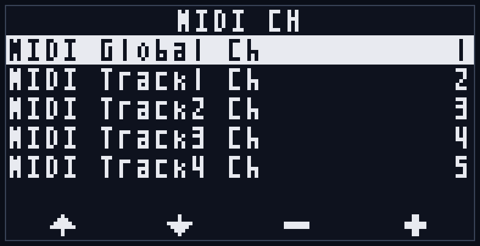
| 項目 | 値 | 説明 |
|---|---|---|
| MIDI Global Ch | -- / 1〜16 | MIDIリモート制御を受け付けるMIDIチャンネル。ノートによる録音トリガ・再生位置リセット・再生方向/速度の遠隔操作(「10-4」)、CCによるDRY/FDBKレベル操作(CC#7/#8)とFXマクロ操作(CC#90/#91。「9-7」)、ピッチベンド(「8-3」)、外部スケールの入出力(NRPN。「8-2」)に使われます。-- で無効(初期値)、1〜16でそのチャンネルを受信します。 |
| MIDI Track1 Ch 〜 MIDI Track4 Ch | -- / 1〜16 | 各トラックのMIDI操作を受け付けるMIDIチャンネル。ノートによるステップ操作(ジャンプ/スタッター。「10-5」)と、CCによる再生レベル/方向/パン/速度(ピッチ)/ループ範囲/ステップコントロール/録音ソース/FXパラメータ(CC#16〜#49)/FXマクロの操作(「10-6」)、ピッチベンド(「8-3」)に使われます。トラックごとに個別に設定します。-- で無効(初期値)。MIDI Global Ch とは独立して動作します。 |
DISPLAYカテゴリ
| 項目 | 値 | 説明 |
|---|---|---|
| Screen Off | 10 min / 30 min / 60 min / NEVER | 無操作時にOLEDディスプレイを自動的に消灯するまでの時間。NEVERで消灯しません。初期値は30 min。ボタンまたはフェーダの操作で再点灯します(MIDI入力は操作として扱われないため、無操作タイマーをリセットせず、再点灯もしません)。 |
PITCHカテゴリ (ver 2)
ピッチ操作(MIDIピッチベンドとFXマクロのPITCH)のクオンタイズと範囲の設定です。詳細は「8-2. ピッチクオンタイズとスケール」「8-3. MIDIピッチ操作」を参照してください。
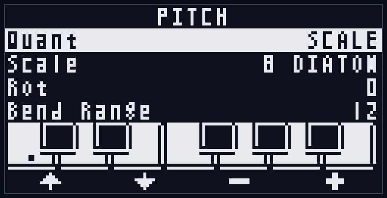
| 項目 | 値 | 説明 |
|---|---|---|
| Quant | OFF / SCALE / EXT | ピッチ操作をスケールに量子化する設定。OFF=量子化しない(初期値)、SCALE=本体のスケール設定に量子化、EXT=外部から受信したスケール(NRPN)に量子化(未受信の間は本体のスケール設定を使用)。 |
| Scale | 1 ROOT 〜 16 CHROMA | 量子化に使うスケールプリセット(16種)。初期値は 8 DIATON。 |
| Rot | 0〜11 | スケールの回転(ルートの移動)。初期値は0。 |
| Bend Range | 1〜48 | ピッチベンドの範囲(半音)。初期値は12。T3+T4同時押しで12に戻ります。 |
画面下部には、選択中のスケール(Rot適用後)が鍵盤グラフィックで表示されます(スケールに含まれる鍵が塗りつぶし、ルートの鍵にドットマーク)。
FX MACROカテゴリ (ver 2)
FXマクロのプリセットを編集するカテゴリです(「9-7. FXマクロ」参照)。
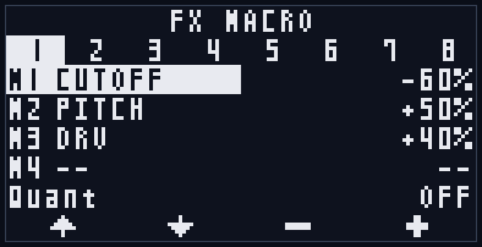
- 最上段のタブ(1〜8)で編集するプリセットを選びます
- M1〜M4の各行で、マクロの行き先(dest)と値を設定します。1行の左半分がdest、右半分が値で、カーソルはセル単位で移動します
- 最下行のQuant(OFF / STEP)は、マクロ切替のステップクオンタイズ設定です
- T3+T4同時押し: destセルで=そのスロットをクリア、値セルで=0に戻します
画面構成:
- 最上段: カテゴリヘッダ(カーソルがあるときは◀▶と左右の隣接カテゴリの略名を表示)
- 設定項目(ラベル+現在値)を一覧表示。選択中の行は反転表示
- フッタ: ↑/↓と、フォーカスに応じた ◀▶(カテゴリ切替)または −+(値変更)のアイコン
8. ピッチとタイムストレッチ (ver 2)
ver2では、トラックごとにピッチシフト/タイムストレッチが行えます。
8-1. 2つのモード (VARI / STRETCH)
各トラックは「シンクタイプ(SYNC)」を持ち、テンポ(クロック)への追従方式を選べます。切替はトラック編集モードのSYNC項目で行います(「7-2-1」参照)。
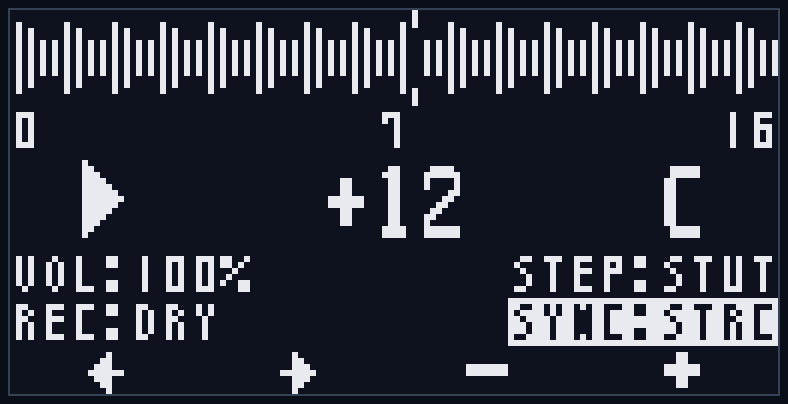
- VARI (バリスピード): ver1と同じ方式です。テンポが変わると再生速度が変わり、ピッチも連動して変わります(テープの早回し/遅回しと同じ)。再生速度 x0.5/x1.0/x2.0 の設定が有効です。
- STRETCH (タイムストレッチ。表示は "STRC"): ループの長さ(テンポへの追従)はそのままに、ピッチだけを±24半音の範囲で独立に変更できます。トラック編集モードでは、再生速度の位置にあった項目がピッチ項目に切り替わります。x0.5/x2.0の速度倍率は音に影響しません(設定値は保持されます)。
- 切替は、停止中は即時、再生中は次のステップ境界で反映されます(切替の瞬間には短いクロスフェードがかかります)
- 録音/オーバーダブ中は切り替えられません
- 再生速度(VARI用)とピッチ(STRETCH用)の設定値は独立に保持されるため、シンクタイプを行き来しても互いの値は失われません
- ピッチの変更は再生中でも即座に反映されます(ステップ境界を待ちません)
- シンクタイプとピッチはSDカードに自動保存されます
8-2. ピッチクオンタイズとスケール
システム設定のPITCHカテゴリ(「7-4」参照)で、ピッチ操作をスケールに量子化できます。量子化の対象はMIDIピッチベンド(「8-3」)とFXマクロのPITCH(「9-7」)です。トラック編集モードのピッチ項目(半音単位)は量子化されず、スケール全体の移調として機能します。
- Quant: OFF / SCALE / EXT
- OFF(初期値): 量子化しません。ベンドは受信した瞬間に連続的に反映されます
- SCALE: 本体のスケール設定(Scale/Rot)に量子化します。反映はステップ境界に揃えられます
- EXT: 外部機器から受信したスケール(NRPN)に量子化します。何も受信していない間は本体のスケール設定を使います
- Scale: 16のスケールプリセットから選択します(初期値 8 DIATON):
1 ROOT / 2 4TH5TH / 3 PENTA / 4 RYUKYU / 5 RAGA / 6 HEXA-L / 7 HEXA-D / 8 DIATON / 9 MELMIN / 10 HARMIN / 11 GYPSY / 12 MISTRY / 13 AUGMNT / 14 WHOLE / 15 DIMIN / 16 CHROMA
- Rot: スケールを回転してルート(根音)を移動します(0〜11)
- 画面下部の鍵盤グラフィックに、選択中のスケール(Rot適用後)とルート位置が表示されます
補足:
- QuantがOFF以外かつRotが0以外のときは、ベンドを中央(±0)に戻しても量子化によって元のピッチちょうどには戻らないことがあります(スケールの構成音に吸着するためです)
- 外部スケール入出力(NRPN): Quant=EXTのとき、MIDI Global ChのNRPNメッセージでスケール(構成音・優先度・微分音チューニング)を外部から指定できます(Cosmos Quencer/Trigger HaCker2/SQTのスケール送信と互換)。また、本体でScale/Rotを変更すると、同じ形式のNRPNをMIDI Global Chへ送信します。メッセージの詳細は「Appendix G-4」を参照してください
8-3. MIDIピッチ操作 (ピッチベンド)
外部MIDI機器のピッチベンドで、トラックのピッチをリアルタイムに操作できます(別売のMIDI拡張モジュールが必要です)。
- 受信チャンネル: MIDI Track1〜4 Chで受けるとそのトラックに作用します。MIDI Global Chで受けると、リモート制御と同じ対象規則で作用します(黒鍵を押している間はそのトラック、押していないときはUndo対象トラック。「10-4」参照)
- ベンドの範囲はシステム設定のBend Range(1〜48半音、初期値12)で設定します。中央=±0です
- STRETCHのトラックでは、ピッチ項目の値にベンド分が加算されます(合計は±48半音でクランプ)
- VARIのトラックにも効きます: ベンドがかかっている間だけ内部的にストレッチ方式の再生に切り替わり、バリスピードのピッチにベンド分が加算されます(ループの周回・同期はそのまま)。ベンドを中央に戻すと、少し置いて通常のバリスピード再生に戻ります。録音/オーバーダブ中のトラックには効きません(終了後に反映されます)
- Quant設定(「8-2」)がSCALE/EXTのときは、ベンドがスケールに量子化され、反映はステップ境界に揃えられます
- ベンド量は保存されません(電源を切ると±0に戻ります)。トラックのクリアでもリセットされます
8-4. 制約と使いどころ
STRETCHの制約:
- オーバーダブできません("OD BLOCKED / stretch track: bounce first" の警告)。新規録音は可能です。オーバーダブしたいときは、録音ソースを使って音を固める(リサンプル。「4-11」参照)か、シンクタイプをVARIに戻してください
- リサンプルの基本形: STRETCHで作った音を固めたいトラックだけ鳴らし、空きトラックに録音ソースTRKで録音 → 元トラックをクリア、という手順です
音質の傾向 (STRETCH):
STRETCHは音を小さな断片(グレイン)に分けて重ねる方式のため、素材とピッチ量によっては質感の変化が現れます。
- 大きなピッチアップ(目安: +5半音以上)では、ノイズ成分の多い素材でジリジリとした質感が出ることがあります
- 非常に低い帯域(サブベース)を多く含む素材の大きなピッチダウンでは、周期的なうねりが出ることがあります
- ベンドを素早く動かしている間は、質感が一時的に粗くなることがあります
- ピッチ±0のSTRETCH再生は、通常の再生とほぼ同じ音です
使い分けの目安:
- 速度とピッチの連動(倍速/半速の音楽的効果)を使いたい → VARI
- テンポやループ長を保ったままピッチだけ動かしたい、外部クロックのピッチ揺れを避けたい → STRETCH
9. エフェクト (ver 2)
ver2では、トラックごとに独立したエフェクト(FX)をかけられます。エフェクトは再生時にリアルタイムに適用される非破壊方式です(「4-10. エフェクトの考え方」参照)。操作方法は「7-2-2. FXページ」を参照してください。この章では各エフェクトとパラメータの内容を説明します。
9-1. シグナルチェーンと共通ルール
エフェクトの接続順は以下の固定順です:
ピッチ/タイム再生 → TAPE (WOW/FLANGER) → LO.CUT → CRUSH → FILTER → DRIVE → レベル/パン- すべての設定はトラックごとに独立で、ループセットの一部としてSDカードに自動保存されます
- OFFの流儀は2通りあります: 値0=OFF(DEPTH / CRUSH / DRV は0にすればそのエフェクト自体が完全に無効)と、選択肢/トグルでOFF(LO.CUT / FLT.ON)
- FX設定はUndoの対象外です。トラックのクリアで初期値に戻ります
- 各パラメータはMIDI CC(CC#16〜#49)でも操作できます(「10-6」「Appendix G-2」参照)
9-2. TAPE
テープ系の揺れ/うねりの効果です。TAPE.TYPで2つのタイプを切り替えます。
| パラメータ | 値 | 説明 |
|---|---|---|
| TAPE.TYP | WOW / FLANGER | タイプ切替。WOW=ワウ&フラッター(テープの再生ムラによるピッチ揺れ)、FLANGER=テープフランジャ |
| DEPTH | 0〜100 | 効果の深さ。0でOFF。WOWではピッチ揺れの深さ、FLANGERではスイープ幅とフィードバック量をまとめて操作します |
| TAPE.LFO | LFO1 / LFO2 / EF | FLANGERのスイープに使うモジュレータの選択(「9-6」参照)。EFを選ぶとエンベロープフランジャ(音量が大きいほどスイープが深い側へ動く)になります。WOWでは使用されません(値の欄に "WOW" と表示されます) |
| LO.CUT | OFF / 10HZ / 20HZ / 40HZ / 80HZ / 160HZ | ローカットフィルタ。不要な低域を取り除きます(モジュレーション/FXマクロの対象外) |
- FLANGERのスイープは再生中のみ動きます(停止中は中央で静止します。「9-6」の停止時の挙動を参照)
- WOWはDEPTHが0より大きいとき、エフェクト音にごくわずかな遅れ(約10ms)が生じます(0では完全にバイパスされます)
9-3. LOFI
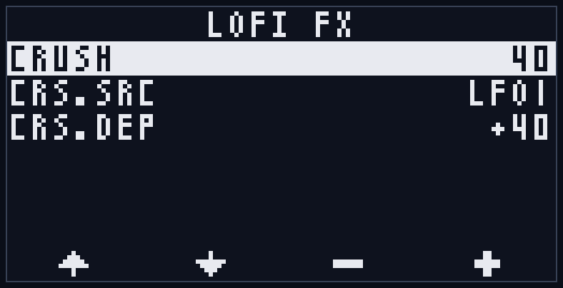
| パラメータ | 値 | 説明 |
|---|---|---|
| CRUSH | 0〜100 | ビット深度とサンプルレートを同時に下げるローファイ効果。0でOFF、値を上げるほど粗く歪んだ質感になります |
| CRS.SRC / CRS.DEP | 「9-6」参照 | CRUSHへのモジュレーション設定 |
9-4. FILTER
| パラメータ | 値 | 説明 |
|---|---|---|
| FLT.ON | OFF / ON | フィルタの有効/無効(初期値OFF) |
| FLT.TYP | LP / HP / BP / NOTCH | フィルタタイプ(ローパス/ハイパス/バンドパス/ノッチ) |
| CUTOFF | 0〜100 | カットオフ周波数(初期値100) |
| RESO | 0〜100 | レゾナンス(カットオフ付近の強調) |
| CUT.SRC / CUT.DEP | 「9-6」参照 | CUTOFFへのモジュレーション設定 |
9-5. DRIVE
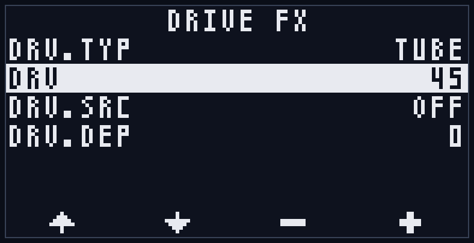
チェインの最終段にかかる歪み(サチュレーション)です。
| パラメータ | 値 | 説明 |
|---|---|---|
| DRV.TYP | SOFT / TANH / TUBE / HARD / FOLD | 歪みのカーブの選択。SOFT/TANH=なめらかな飽和、TUBE=非対称の飽和(偶数次倍音が加わる)、HARD=ハードクリップ、FOLD=波形の折り返し(ウェーブフォールド) |
| DRV | 0〜100 | 歪みの量。0でOFF。音量差が出にくいよう自動レベル補正がかかります |
| DRV.SRC / DRV.DEP | 「9-6」参照 | DRVへのモジュレーション設定 |
9-6. モジュレーション
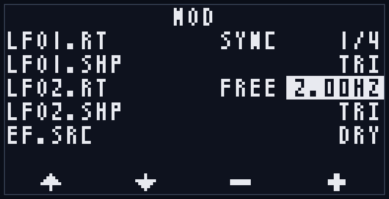
トラックごとに、共有のモジュレータとしてLFO×2とエンベロープフォロワ(EF)×1を持ち、5つの行き先へ接続できます。
モジュレータの設定(MODカテゴリ):
| パラメータ | 値 | 説明 |
|---|---|---|
| LFO1.MD / LFO2.MD | SYNC / FREE | LFOのモード。SYNC=テンポ同期、FREE=自走(Hz指定) |
| LFO1.RT / LFO2.RT | SYNC時: 1/1, 1/2, 1/4, 1/8, 1/16, 1/4T, 1/8T, 1/16T ・ FREE時: 0.01〜100Hz | LFOの速さ。SYNCでは音符の分割(Tは3連)、FREEではHz表示になります。モードを切り替えると、そのときの速さと等価な値へ自動換算されます |
| LFO1.SHP / LFO2.SHP | TRI / SIN / SAW / SQR / S&H | LFOの波形(三角/サイン/ノコギリ/矩形/サンプル&ホールド) |
| EF.SRC | SELF / DRY / T1 / T2 / T3 / T4 | エンベロープフォロワが追従する音源。SELF=自トラック、DRY=入力音、T1〜T4=各トラックの出力 |
行き先の設定(各カテゴリ内のSRC/DEPのペア):
| 行き先 | パラメータ | ある場所 |
|---|---|---|
| トラックレベル | LV.SRC / LV.DEP | LEVEL FX |
| パン | PAN.SRC / PAN.DEP | LEVEL FX |
| フィルタカットオフ | CUT.SRC / CUT.DEP | FILTER FX |
| CRUSH | CRS.SRC / CRS.DEP | LOFI FX |
| ドライブ量 | DRV.SRC / DRV.DEP | DRIVE FX |
- SRC: OFF / EF / LFO1 / LFO2 — 行き先ごとにモジュレータを選びます
- DEP: −100〜+100 — モジュレーションの深さと方向。0で無効
- 実効値は「設定値+モジュレーション」で計算され、設定値そのものは変化しません(FXページの表示は設定値のままです)
- レベル(LV.DEP)へのモジュレーションだけは乗算的に働きます: 負の方向では完全ミュートまで下げられ(ダッキング)、正の方向では最大3倍までブーストされます
- 停止中はモジュレーションが止まり、実効値は設定値そのものになります。再生を開始するとLFOは位相の先頭から動き始めます
接続例(定番レシピ):
- オートパン: PAN.SRC=LFO1、PAN.DEPを+方向へ
- トレモロ: LV.SRC=LFO1、LV.DEPを−方向へ
- オートワウ: FLT.ON=ON、FLT.TYP=LP、CUT.SRC=EF、CUT.DEPを+方向へ(EF.SRC=SELF)
- ダッキング: LV.SRC=EF、LV.DEPを−方向へ、EF.SRC=DRY(または他のトラック) — 選んだ音源が鳴っている間、このトラックの音量が下がります
9-7. FXマクロ
複数のFX変化を最大4つまとめて「マクロプリセット」として登録し、MIDI CCで呼び出す機能です。プリセットは8つあり、本体設定として保存されます(全ループセット共通)。
編集(システム設定のFX MACROカテゴリ。「7-4」参照):
- 最上段のタブ(1〜8)で編集するプリセットを選択します
- M1〜M4の各行で、行き先(dest)と値を設定します
- destの選択肢: --(未割当) / LEVEL / PAN / PITCH / 各FXパラメータ(LO.CUTとON/OFFトグルは対象外)
- 値: 連続系のdestでは−100%〜+100%のオフセット。選択式のdest(FLT.TYPなど)ではその選択肢そのもの(係合中だけ値を上書き)
- destを変更すると値は0にリセットされます
- 最下行のQuant(OFF / STEP): STEPにすると、再生中のマクロの切替・係合・解除がステップ境界に揃えられます(停止中は即時)
呼び出し(MIDI CC。「10-6」参照):
- CC#90: プリセット選択。値を16で割った範囲で1〜8に対応します(0〜15=プリセット1、16〜31=プリセット2、…、112〜127=プリセット8)
- CC#91: マクロの深さ。0で解除、値を上げるほどマクロの効果が深くかかります(連続系destの実効オフセット=マクロの値×CC#91の深さ)
- トラックチャンネルで受けるとそのトラックに、グローバルチャンネルで受けるとリモート制御と同じ対象規則(黒鍵修飾/Undo対象トラック。「10-4」参照)で作用します
- CC#90を一度も受けていないトラックは、システム設定のFX MACROカテゴリで選択中のタブのプリセットを使います(編集しながらCC#91だけで試聴できます)
動作の要点:
- マクロはFXの設定値(ベース)を書き換えません。CC#91を0に戻すと元の設定値へ正確に復帰します(FXページの表示は常に設定値のままです)
- PITCHは±100%=±24半音に対応し、ピッチクオンタイズの対象です(「8-2」参照)
- FLT.TYP / CUTOFF / RESOを含むプリセットが係合している間は、フィルタ(FLT.ON)が自動的にONになります
- プリセットの選択状態と深さは保存されません(電源を切るとリセットされます)
使用例: ステップコントロールのスタッター(「10-5」参照)と組み合わせて、スタッターで刻みながらCC#91でフィルタやピッチの変化を重ねると、ブレイク的なパフォーマンスができます。
! 補足: CC#91はGM規格で "Effects 1 Depth" に割り当てられている番号のため、DAWや一部の機器が初期化時に自動送信することがあります。意図せずマクロがかかる場合は、送信側の設定を確認してください。
10. クロック同期とMIDI
LilaC Repeater は、内部クロックのほか、CLK入力(クロックパルス)とMIDIクロック(別売のMIDI拡張モジュール利用時)による外部同期に対応します。
録音/再生のステップは常にクロックに同期し、再生位置とクロックの位相はPLL制御によって保たれるため、長時間ループを再生してもサンプルとクロックの位相がズレません。
10-1. クロックソースと自動切替
クロックソースには「内部」「CLK入力(外部クロックパルス)」「MIDIクロック」の3種類があります。
ソースの切り替えは自動で行われます。
- 起動直後は内部クロックです。テンポはSPEEDフェーダで60〜240BPMの範囲で設定します。
- CLK入力にクロックパルスが入力されると、CLK入力同期に切り替わります。
- MIDIクロック(またはMIDI START)を受信すると、MIDI同期に切り替わります。ただしCLK入力同期中はCLK入力が優先され、CLK入力が途切れて内部クロックに戻った後にMIDI同期へ切り替わります。
- 外部クロックが一定時間途切れると(直近の間隔の約4倍、最短約2秒)、最後に検出したテンポを保持したまま内部クロックに戻ります。テンポが確定する前(2発目のパルスが届く前)にCLK入力が途切れた場合は、約1秒で従前のテンポのまま内部クロックに戻ります。
- 再生を停止すると、クロックソースは内部に戻ります(外部マスターが動作していれば、次のクロック/パルスで再び外部同期に切り替わります)。
外部同期中はSPEEDフェーダは無効になります(「5-2. レベルフェーダ」参照)。
10-2. CLK入力/出力とリセット (CLK IN / CLK OUT / RST)
クロックパルスによる同期・出力です。本機ではステップ(4ppqn = 1拍あたり4パルス)を基準にやり取りします(「4-2. ステップ」参照)。
- CLK入力: ステップ単位(4ppqn)のクロックパルスを入力します。入力されたパルスの間隔からテンポを測定し、同期します。対応テンポは 20BPM以上(パルス間隔0.75秒以内)です。20BPM未満の外部クロック同期は未対応です。これより遅い間隔のパルスはテンポとして扱われず、従前のテンポを保った内部クロック動作に約1秒で戻ります(パルスごとにステップ位相の再同期のみ行われます)。
- CLK出力: 再生中、ステップごとに約5msのクロックパルス(4ppqn)を出力します。内部同期・外部同期のいずれでも出力され、停止中は出力されません。
- RST入力: 再生位置をループ先頭に戻します。ゲートをHIGHに保持し続けている間は先頭に固定されます(「6-4. リセット操作」参照)。
- CLK Delay設定 (ver 2): RST入力とCLK入力を同じソースから同時に受けるパッチで、リセットとクロックの適用順序を整える設定です(「7-4. システム設定モード」のCLOCKカテゴリ参照)。
10-3. MIDI同期
別売のMIDI拡張モジュール(MIDI CoM+)を利用すると、MIDI IN/OUTを使ったクロック・トランスポート同期が可能になります。
MIDIクロックは標準の24ppqnに対応します。

MIDI拡張モジュールは、背面の MIDI EXPAND/SLAVEコネクタ に接続してください(「2-2. バック」参照)。
! 注意: MIDI拡張モジュールをMASTERコネクタに接続しないでください。
10-3-1. MIDI受信 (RX)
外部MIDIマスターから以下のメッセージを受信して同期します(MIDI Sync設定でRXが有効な場合)。
| メッセージ | 動作 |
|---|---|
| MIDIクロック (24ppqn) | MIDI同期に切り替え、テンポと位相に同期します。 |
| Start | 再生位置を先頭に戻して再生を開始します。 |
| Continue | 再生を開始します。停止中の各トラックは先頭から再生を始めるため、通常はStartと同様の動作になります(Startと異なり、すでに再生中のトラックの位置は変更しません)。 |
| Stop | 再生を停止します。録音/オーバーダブ中に受信した場合は、テイクを閉じてから停止します(録音停止がステップ境界に揃うため、実際の停止が最大1ステップ遅れることがあります)。 |
| Song Position Pointer (位置0) | 再生位置を先頭に戻します。 |
なお、20BPM未満に相当する非常に遅いMIDIクロックにも再生は追従しますが、クロックが途絶えた際に内部クロックへ引き継ぐテンポには反映されません(20BPM以上で検出した直前のテンポを保持します)。
10-3-2. MIDI送信 (TX)
本機のクロック・トランスポートを外部MIDI機器へ送信します(MIDI Sync設定でTXが有効な場合)。
| メッセージ | 送信タイミング |
|---|---|
| MIDIクロック (24ppqn) | システム設定「Send MIDI CLK」に従う。PLAY=再生中のみ(初期値)、ALWAYS=停止中も含め常時。いずれも内部/外部どちらのクロックでも送信します。 |
| Start | 再生を開始したとき |
| Stop | 再生を停止したとき |
| Song Position (位置0) | 再生中に全トラックの再生位置をリセットしたとき(FUNC+START、RST入力、MIDIリモートのBなど) |
Send MIDI CLK (PLAY / ALWAYS) … MIDIクロックを送信するタイミングを切り替えます。
- PLAY (初期値): 再生中のみクロックを送信し、停止中は送信しません。停止すると同期先の外部シーケンサなども止まります。
- ALWAYS: 停止中も含めてクロックを送信し続けます。外部のドラムマシンやアルペジエータを、本機が停止していても常に本機のテンポへ追従させたいときに使います(再生開始/停止のStart/Stop自体は従来どおり送信されます)。
この設定はMIDI送信(MIDI OUT)と、UARTチェインで下流のLilaC Repeaterへ送るクロックの両方に適用されます(「13. UARTチェイン」参照)。
10-3-3. MIDI Sync設定
システム設定の「MIDI Sync」で、送受信の有効・無効を切り替えます(「7-4. システム設定モード」参照)。
| 設定値 | 動作 |
|---|---|
| TX RX | 送信・受信ともに有効(初期値)。 |
| TX | 送信のみ。外部機器を本機に同期させたいとき。 |
| RX | 受信のみ。本機を外部マスターに同期させたいとき。 |
| -- | MIDI同期を無効化。内部クロックまたはCLK入力で動作します。 |
本機が同期に使うMIDIクロック・トランスポート(Start/Stop/Continue)はMIDIチャンネルを持たないシステムリアルタイムメッセージのため、MIDIチャンネルの設定は不要です。
なお、MIDI拡張モジュールで受信したメッセージはUARTチェインの下流へそのまま転送され、複数のLilaC Repeaterを同期させることができます(「13. UARTチェイン」参照)。
10-4. MIDIリモート制御
別売のMIDI拡張モジュールを接続し、システム設定の「MIDI Global Ch」(MIDI CHカテゴリ)を 1〜16 に設定すると、外部MIDIキーボードのノート入力で本機を遠隔操作できます(「7-4. システム設定モード」参照)。設定が "--" のときは無効です。
操作はノート番号を12で割った余り(ノート番号 % 12)で決まるため、どのオクターブの鍵盤でも同じ機能になります。白鍵が操作、黒鍵が対象トラックを指定する修飾キー(押している間だけ有効)です。
| 鍵 | 機能 | 種別 |
|---|---|---|
| C | 再生方向を逆方向(REV)に | トリガ(押した瞬間) |
| D | 再生方向を順方向(FWD)に | トリガ |
| E | 再生速度 x0.5 | トリガ |
| F | 再生速度 x1.0 | トリガ |
| G | 再生速度 x2.0 | トリガ |
| A | 録音トリガ(RECボタン/REC入力と同じ) | トリガ |
| B | 再生位置リセット | ゲート(押している間、毎ステップ先頭へ固定) |
| C# | 対象=全トラック | 修飾(押している間) |
| D# / F# / G# / A# | 対象=トラック1 / 2 / 3 / 4 | 修飾(押している間) |
対象トラックの決まり方:
- 黒鍵を押していないとき: C/D/E/F/G(方向・速度)は操作対象トラック(トラック編集モードでは編集ターゲット、それ以外では録音ターゲット)に適用されます。
- 黒鍵を押しているとき: C#=全トラック、D#/F#/G#/A#=該当トラック。複数の黒鍵を同時に押すと、その全トラックが対象になります。
- A(録音トリガ) は黒鍵に関わらず常に録音ターゲットに作用します(REC入力ジャックと同じmode依存の動作)。
- B(再生位置リセット) は、黒鍵なし(またはC#)のときは全トラックを、トラック指定の黒鍵(D#/F#/G#/A#)を押しているときはそのトラックだけをリセットします。押している間は毎ステップ先頭に固定され、離すと解除されます(RST入力と同じゲート動作)。
補足:
- このノート操作は MIDI Sync(クロック)設定とは独立して動作します。MIDI Global Ch が設定されていれば、RXが無効でも有効です。
- ベロシティ0のノートオンはノートオフとして扱います。
- 受信したノートはUARTチェインの下流へも転送されるため、同じチャンネルを設定した下流のLilaC Repeaterも同時に反応します(チェーン一括操作。「13. UARTチェイン」参照)。
- 再生速度の操作(E/F/G)は、シンクタイプがSTRETCHのトラックには音として効きません(値は保持され、VARIに戻したときに有効になります。「8-1」参照)。
- 黒鍵による対象トラック指定は、グローバルチャンネルで受信するピッチベンド(「8-3」)とFXマクロCC#90/#91(「9-7」)でも同じ規則で使われます(黒鍵を押していないときはUndo対象トラックが対象になります)。
10-5. MIDIノートによるステップ操作(ステップジャンプ / スタッター)
外部MIDIキーボードのノート番号(0〜127)をステップ番号に見立て、ノートに応じて対象トラックの再生位置を操作する機能です。トラックごとに独立して動作し、フレーズの途中から鳴らし直したり、刻むように演奏したりできます。トラック編集モードの「ステップコントロール(STEP)」で、ノートを受けたときの動作を次の中から選びます。
- ONE / LOOP(ステップジャンプ): ノートを受けた瞬間に、そのステップへ再生位置をジャンプさせます。
- STUT(スタッター): ノートを押している間だけ、指定した範囲をくり返します。離すと元の流れに戻ります。
- --: この機能を使いません(ステップ操作なし)。
対応するステップは、いずれの値でも「ノート番号を録音ステップ数で割った余り」で求めます(どのオクターブの鍵盤でも同じステップになります)。
使い方:
- システム設定の「MIDI Track1 Ch 〜 MIDI Track4 Ch」(MIDI CHカテゴリ)で、操作を受けるトラックのMIDIチャンネルを設定します("--" は無効。「7-4. システム設定モード」参照)。
- トラック編集モードで対象トラックの「ステップコントロール(STEP)」を ONE / LOOP / STUT のいずれかに設定します(初期値は STUT。「7-2. トラック編集モード」参照)。
- 設定したチャンネルでノートを送ると、選んだ動作でそのトラックの再生位置が操作されます。
10-5-1. ステップジャンプ(ONE / LOOP)
ノートを受けた瞬間に、そのステップへ再生位置を飛ばします。
- ジャンプ中は Loop Start を無視し、ジャンプ先ステップを先頭として Loop Length(ループ長)ぶんの範囲をループ対象とします(Loop Length は保持されます)。
- ONE: ジャンプ後にループ長ぶんだけ再生して、そのトラックだけ自動停止し、次のノート入力を待ちます("--" から ONE に切り替えた直後も、そのトラックは停止してノート待ちになります)。
- LOOP: ジャンプ位置からループ再生を続けます("--" から LOOP に切り替えた直後は通常どおり再生を続け、実際にノートを受け取った時点でジャンプします)。
- ジャンプはノートを受けた瞬間に即座に反映されます(ステップ境界を待ちません)。トリガとなるのはノートオン(ベロシティ>0)のみです。
- ジャンプ中はピッチの揺れを避けるため、クロックへの位相補正(PLL)が一時的に無効になります(ステップ表示は通常どおり進みます)。
10-5-2. スタッター(STUT)
ノートを押している間だけ、そのノートが表すステップを含む短い範囲をくり返し再生する機能です(スタッター/ロール効果)。フレーズの一部を刻んで演奏したり、ドラムのロールのような効果を作れます。初期値がこのSTUTですが、トラックにMIDIチャンネルを割り当ててノートを受け取らない限り何も起こりません(通常のループ再生のままです)。
- 1つのノートを押す: そのステップ1つ分だけをくり返します。
- 複数のノートを同時に押す: いちばん低い音のステップから、いちばん高い音のステップまでを範囲としてくり返します(押す順番は関係ありません)。押したまま音を足したり減らしたりすると、範囲がその場で変わります。
- すべてのノートを離す: 次のステップの区切りで、もし何も操作しなかったら再生されていたはずの位置へ戻り、通常再生を続けます。
- くり返しはステップの区切りにきちんと合うため、テンポに乗ったリズミカルな演奏になります。ステップジャンプ(ONE/LOOP)と違い、STUTでは位相補正(PLL)は有効のままです。
- 一度に範囲として扱えるノートは最大8音までです。逆再生中のトラックは範囲の末尾から逆走します。
10-5-3. 共通事項
- 録音/オーバーダブ中のトラックはステップ操作の対象外です。録音・オーバーダブの開始、Undo、ループセット切り替え、SDカードからの読み込みが起きると、押しているノートの状態はいったんリセットされ、次のノートから再び反応します。
- ステップコントロールを -- に戻すと、次のステップ境界で本来の再生位置に戻ります。
- ステップコントロールの設定値はSDカードに自動保存されます。トラックをクリアすると初期値の STUT に戻ります。
- MIDI Global Ch(リモート制御、「10-4」)とは独立して動作するため、必要なら別々のチャンネルに割り当てて併用できます(同じチャンネルに設定した場合は両方の機能が反応します)。受信したノートはUARTチェインの下流へも転送されます。
10-6. MIDIコントロールチェンジ(CC)制御
別売のMIDI拡張モジュールを接続すると、外部MIDI機器のコントロールチェンジ(CC)で、DRY/FDBKレベルや各トラックの再生パラメータを遠隔操作できます。受信に使うMIDIチャンネルは、ノート操作(「10-4」「10-5」)と共通のシステム設定 MIDI Global Ch / MIDI Track1〜4 Ch(MIDI CHカテゴリ)です(「7-4. システム設定モード」参照)。ノートと同じく、CC制御は MIDI Sync(クロック)設定とは独立して動作し、対象チャンネルが "--"(無効)のときは無視されます。
グローバルチャンネル(MIDI Global Ch)で受け付けるCC — 全体レベルとFXマクロの操作です。
| CC番号 | 機能 | 値の対応 |
|---|---|---|
| CC#7 (Volume) | DRYレベル | 0(最小)〜127(最大) |
| CC#8 (Balance) | FDBKレベル | 0(最小)〜127(最大) |
| CC#90 (ver 2) | FXマクロのプリセット選択 | 16刻みでプリセット1〜8(0〜15=1、…、112〜127=8)。対象トラックはリモート制御の対象規則(「9-7」「10-4」参照) |
| CC#91 (ver 2) | FXマクロの深さ | 0=解除 / 1〜127=深さ(「9-7」参照) |
このほか、システム設定のQuantがEXTのときは、グローバルチャンネルのCC#99/#98/#6/#38がNRPN(外部スケール入力)として解釈されます(「8-2」「Appendix G-4」参照)。
トラックチャンネル(MIDI Track1〜4 Ch)で受け付けるCC — そのトラックの再生パラメータとFXの操作です(「4-5」「7-2. トラック編集モード」参照)。
| CC番号 | 機能 | 値の対応 |
|---|---|---|
| CC#7 (Volume) | トラック再生レベル | 0(最小)〜127(最大) |
| CC#9 | 再生方向 | 64以上=順方向(FWD)/ 64未満=逆方向(REV) |
| CC#10 (Pan) | パン | 0=左端 / 64=センター(C)/ 127=右端(標準MIDIパン) |
| CC#3 (ver 2) | 録音ソース(REC) | 0〜21=DRY / 22〜42=D_L / 43〜63=D_R / 64〜85=TRK / 86〜106=ALL / 107〜127=SLF |
| CC#12 | Loop Start(ループ範囲の開始) | 値=開始ステップ(録音ステップ数でクランプ)。Loop Lengthは保持 |
| CC#13 | Loop Length(ループ範囲の長さ) | 値+1ステップ(0→1ステップ)。127=録音全体。開始位置は保持 |
| CC#14 | 再生速度(VARI時)/ピッチ(STRETCH時) | VARI: 43未満=x0.5 / 86以上=x2.0 / それ以外=x1.0。STRETCH: 0〜127を−24〜+24半音にリニア対応(63〜65=0) (ver 2) |
| CC#15 | ステップコントロール(STEP) | 43未満=ONE / 43〜85=--(無効) / 86〜106=LOOP / 107以上=STUT |
| CC#16〜#49 (ver 2) | FXパラメータ | 各FXパラメータに1つのCC。割り当てと値の対応は「Appendix G-2」参照 |
| CC#90 / CC#91 (ver 2) | FXマクロ(プリセット選択/深さ) | グローバルチャンネルと同じ値の対応で、そのトラックのみに作用(「9-7」参照) |
補足:
- レベル(CC#7/#8)とパン(CC#10)はスムージング処理されるため、値が階段状に変化してもノイズ(ザラつき)なく滑らかに追従します。
- 再生方向(CC#9)・再生速度(CC#14、VARI時)・ループ範囲(CC#12/#13)の変更は、再生中は次のステップ境界で反映されます。パン(CC#10)・ピッチ(CC#14、STRETCH時)・録音ソース(CC#3)・FXパラメータ(CC#16〜#49)は即座に反映されます(トラック編集モードでの編集と同じ。「7-2」参照)。
- ステップコントロール(CC#15)はトラック編集モードのSTEP設定(「7-2」)と同じ値を変更するもので、各値の挙動は「10-5. MIDIノートによるステップ操作」と同じです。切り替えに伴う副作用(ONE=当該トラックを停止してノート待ち、--=再生位置リセット、STUT=次のノート待ち)も同様に起きます。連続可変ノブよりも、スイッチや段階的なコントローラでの操作を推奨します。
- 再生方向・再生速度・ピッチ・パン・ループ範囲・ステップコントロール・録音ソース・FXパラメータの設定値はSDカードに自動保存されます(再生レベル/DRY/FDBK、FXマクロの選択状態と深さは保存されません。「4-5」「4-7」参照)。パンはスムージング中でも、保存されるのは目標値です。
- これらのCC操作は、トラック編集モードでの編集と同じくUndoの対象外です。
- グローバルチャンネルとトラックチャンネルは独立して判定されます。両方に同じチャンネルを設定した場合、CC#7はDRYレベルとトラック再生レベルの両方に作用します。
- 受信したCCはノートと同様、UARTチェインの下流へも転送されます(「13. UARTチェイン」参照)。
10-7. MIDIプログラムチェンジによるループセット切り替え
外部MIDI機器のプログラムチェンジ(Program Change)で、ループセットを遠隔から切り替えられます。プログラム番号(0〜127)が、そのままループセット(画面表示では+1した1〜128)に対応します。受信に使うMIDIチャンネルは、ノート/CC操作と共通のシステム設定 MIDI Global Ch / MIDI Track1〜4 Ch(「7-4. システム設定モード」参照)です。MIDI Sync(クロック)設定とは独立して動作し、対象チャンネルが "--"(無効)のときは無視されます。
どのトラックが切り替わるかは、受信したMIDIチャンネルで決まります。
- MIDI Global Chで受信したとき: 全トラックをまとめて同じ番号へ切り替えます(LOOP単押しと同じ動作)。トラックがバラバラの番号にいても、全トラックがそろいます。
- MIDI Track1〜4 Chで受信したとき: そのトラックだけを切り替えます(LOOP+Tnと同じ動作)。
- グローバルChとトラックChに同じチャンネルを設定している場合は、トラックChのほうが優先されます(複数のトラックChが重なるときは番号の小さいトラックが優先)。
動作の流れ(ボタンで操作するループセット選択モードと同じです。「7-3」参照):
- 1回目のプログラムチェンジでループセット選択モードへ移動します(トラック編集モードなど、どのモードからでも移動できます)。画面の表示(LOAD/CHNG待ちなど)はボタン操作のときと同じです。
- 切替先に録音データがある場合: 1回目で読み込み(LOAD)、同じ切替先を指す2回目で切り替え実行(CHNG)。読み込み中に同じ番号のプログラムチェンジを受け取ると、読み込みが終わった時点で自動的に切り替わります。
- 切替先が空の場合: 1回目ですぐに新規ループセットへ切り替えます(NEW)。
- プログラム番号が今と同じときは何も起こりません(モードも移動しません)。
- 1回目とは別のチャンネル(全トラック用と特定トラック用、あるいは別のトラック)のプログラムチェンジを受け取ると、切り替えをやめて通常モードへ戻ります。
次の場合は切り替えできません:
- SDカードが使えないときは移動できません。また録音/オーバーダブ中は、ボタン操作と同じ条件で移動できません(グローバルCh=ベース選択と同様に録音ターゲット基準でブロックされ、トラックCh=そのトラック自身が録音中のときのみブロックされます)。いずれも警告が表示されます。
- ループセットの切り替えは一度に1つだけです(複数トラックを同時には切り替えられません)。
プログラムチェンジとボタンは同じループセット選択モードを操作するので、どちらで移動しても、その後はもう一方の操作と混ぜて使えます。
11. SDカード保存
LilaC Repeater は録音したループを自動的にマイクロSDカードへ保存します。SDカードはループセットの保存・読み込みのほか、システム設定の保存、サンプルインポート(セクション12)、ファームウェアアップデート(Appendix A)にも使用します。
- 対応カード: microSD / microSDHC。FAT32 でフォーマットされた32GB以下のカード。
- 保存は録音停止後に自動かつバックグラウンドで行われます。保存中はヘッダに保存インジケータが表示されます。
- SDカードが挿入されていない、または認識できない場合は "NO SD/MMC" が表示され、保存機能は無効になります(Appendix E-1)。
- 保存・読み込みの詳細なファイル構成は Appendix F を参照してください。
11-1. 動作確認済みのSDカード一覧
以下は動作確認済みのSDカードです。記載のないカードでも多くは動作しますが、相性問題が出る場合は下記のカードをお試しください。
| メーカー | 型番 | 容量 | 備考 |
|---|---|---|---|
| Gigastone | microSDHC U1 C10 UHS-I Full HD Video | 32GB | ver1.0出荷時SD |
11-2. SDカード保存内容
SDカードには LILACREP フォルダが作成され、以下が保存されます。
- ループセット: 各ループセット(1-128)のトラックが WAV ファイル＋メタ情報として保存されます。
- WAV は 48kHz / ステレオ / 32bit float 形式で、PC上でも再生・確認できます。録音時のテンポを示すBPM情報(ACIDチャンク)も埋め込まれ、対応するDAWで読み取れます(テンポ不明の場合は埋め込まれません)。
- 各トラックは2世代(A/B)のペアで保存されます。これにより、直前のテイク(Undo の戻り先)も電源を切ったあとまで保持されます。
- メタ情報にはベーステンポ・ステップ数・再生方向 / 速度・パン・ループ範囲のほか、ver2ではピッチ・シンクタイプ・録音ソース・FX設定も含まれます。
- システム設定: システム設定モードの全項目(Loop Sync / Auto Stop / Smooth / MIDI Sync / Send MIDI CLK / CLK IN Start / CLK Delay / MIDIチャンネル設定 / Screen Off / PITCHカテゴリの各設定 / FXマクロの8プリセット)。
- 各トラックのループセット番号: 次回起動時に各トラックが読み込むループセット番号。
保存は変更のあったトラックのみが対象で、録音・オーバーダブのたびに自動でバックアップされます(セクション4-9)。トラック編集モードやMIDI CCでの再生パラメータ・FXの変更も自動保存の対象です。
11-3. ver1 からの引き継ぎ (ver 2)
ver1 → ver2 (自動移行):
- ver1で使っていたSDカードをver2で初めて起動すると、システム設定と各トラックのループセット番号が自動的に新しい内部形式(バイナリレコード)へ移行されます。画面表示は特になく、通常の起動時間内に完了します。移行後、旧形式の設定ファイル(CONFIG.INI / STATE.INI)は削除されます。
- 録音済みのループはそのまま読み込めます(変換は行われません)。ver2の新しいパラメータ(ピッチ・シンクタイプ・録音ソース・FX)はすべて初期値から始まります。
ver2 → ver1 (非対応):
! ver2で使用したSDカードをver1ファームウェアに戻さないでください。
- ver2のシステム設定はver1では読めません(旧形式の設定ファイルは移行時に削除されているため、ver1に戻すと設定は全て初期値になります)。
- ver2でパラメータを保存したトラックのメタ情報はver1では読めず、そのトラックは空として読み込まれることがあります("DATA BROKEN")。
- ver1に戻した状態で録音や設定変更を行うと、ver2のデータが上書きされて失われることがあります。
- なお、WAVファイルの音声データ自体は形式が変わらないため、PCではver1/ver2いずれの録音も再生できます(「Appendix F」参照)。
12. サンプルインポート
PCなどで用意したWAVファイルを、SDカード経由でループセットの任意のトラックに取り込む機能です。本体側にファイル選択画面は持たず、SDカードのルートに置いた設定ファイル import.csv に取り込み内容を記述し、起動時にまとめて処理します。
12-1. 取り込みの手順
- ラックの電源を落とし、SDカードを抜いてPCで開きます。
- SDカードのルートに
samplesフォルダを作成し、取り込みたいWAVファイルを置きます。 - SDカードのルートに
import.csvを作成し、取り込み内容を記述します(書式は12-2)。 - SDカードを本体に戻して電源を入れます。起動時に画面へ "IMPORTING" と対象ファイル名が表示され、取り込みが実行されます。
- 完了すると
import.csvは_import.csvにリネームされ、各行の処理結果が最終列に追記されます。
import.csv は処理後にリネームされるため、次回以降の起動で同じ取り込みが繰り返されることはありません。取り込んだ音は通常録音したループと同じように扱われ、保存・Undo・編集ができます。
12-2. import.csv の書式
1行目はヘッダ行(列名)で、2行目以降が取り込み1件ずつです。列は名前で対応するため順序は自由で、不要な列は省略できます。
| 列 | 内容 |
|---|---|
| file | samples フォルダ内のWAVファイル名 |
| loopset | 取り込み先のループセット番号 (1〜128) |
| track | 取り込み先のトラック番号 (1〜4) |
| slot | current(通常) または undo。省略時は current |
| bpm | テンポ(BPM)で指定する場合に記述 |
| beats | 拍数で指定する場合に記述。bpmより優先 |
| steps | ステップ数で指定する場合に記述。beats・bpmより優先(変拍子向け) |
記述例:
file,loopset,track,slot,bpm,beats,steps
drums.wav,1,1,current,,4,
pad.wav,1,1,undo,,8,
bassline.wav,2,3,current,120,,
oddbar.wav,3,1,current,,,14(1行目: drums.wav をループセット1・トラック1へ「4拍」として取り込み。2行目: pad.wav を同じトラックのUndo側へ「8拍」で。3行目: bassline.wav をループセット2・トラック3へ120BPMで取り込み。4行目: oddbar.wav をループセット3・トラック1へ「14ステップ」として取り込み = 7/8拍子1小節)
12-3. テンポの指定 (steps / beats / bpm)
取り込んだループにも正しいベーステンポを設定する必要があるため、steps(ステップ数)・beats(拍数)・bpmのいずれかを必ず指定します。複数ある場合の優先順位は steps > beats > bpm です。
- steps(ステップ数): そのファイルが何ステップ(16分音符単位)かを直接指定します。
beatsは4ステップ単位(1拍=4ステップ)でしか表せませんが、stepsなら4の倍数でないステップ数も指定でき、変拍子(7/8、5/4 など)のループを正しく取り込めます。beats同様、ファイルの長さをそのままループ長とし、長さとステップ数からベーステンポが決まります。 - beats(拍数): そのファイルが音楽的に何拍かを指定します。ファイルの長さをそのままループ長とし、長さと拍数からベーステンポが決まります。長さが正確なループ素材に向いています(
recorded_steps = beats × 4)。 - bpm: テンポを直接指定します。指定BPMの拍グリッドに合わせてループ長を整え、WAVがグリッドより長ければ末尾をカット、短ければ無音を足します(いずれも継ぎ目のクリックを防ぐ短いフェードが掛かります)。テンポは分かるが長さがぴったりでない素材に向いています。
> ステップあたりのサンプル数が少なすぎる(目安: 64サンプル未満)指定はテンポが過密として ERROR になります。短いWAVに大きなステップ数を指定しないでください。
12-4. current と undo (ループバリエーション)
slot列で、そのトラックの取り込み先を選べます。
- current: 通常の取り込み先です。そのトラックに既存のテイクがある場合、既存テイクはUndo側へ退避され、取り込んだ音が再生されます(Undoで元に戻せます)。
- undo: Undo操作で呼び出せる「裏」のテイクとして取り込みます。同じトラックに
currentとundoの2つを取り込むと、Undoボタンで2つのループを切り替えられるため、ループのバリエーションとして活用できます。
12-5. 対応フォーマットと制限
- サンプリングレート: 44.1kHz / 48kHz / 96kHz (内部の48kHzへ自動変換します)
- ビット数: 16 / 24 / 32bit 整数、または 32bit 浮動小数点
- チャンネル: モノラル / ステレオ (モノラルは左右へ複製します)
- 1トラックの長さの上限は約20秒です。これを超えるファイルは取り込まれません。
- ファイル名は半角英数字(ASCII)を推奨します。8文字を超える長い名前も使用できます。
- 1回の
import.csvで正しく取り込める行数は 最大256件 です。これを超えた行の取り込み結果は保証されません。256件を超える場合は、import.csvを分割して複数回(複数回の起動)に分けて取り込んでください。
12-6. 結果の確認
取り込みが完了すると、画面に "IMPORTED!" と成功・失敗の合計件数("OK: n" / "Fail: n")が約2秒間表示されます。
各行ごとの結果は、取り込み後の _import.csv の各行末尾(result列)に記録されます。成功は OK、失敗は理由付きの ERROR: ... です。エラーがあった場合は、SDカードルートの lr_log.txt にも記録が追記されます。失敗した行はスキップされ、他の行や既存のループには影響しません。
13. UARTチェイン
複数のLilaC Repeaterを接続し、クロックとトランスポート(再生/停止など)を共有して同期させる機能です。
背面のUARTコネクタを数珠つなぎにすることで、先頭(マスター)ユニットのクロック/トランスポートを後続のユニットへ次々と伝えます。
マスターのクロックは、外部から受け取ったMIDIクロックだけでなく、ユニット自身の内部クロック(SPEEDフェーダのテンポ)やCLK入力/トリガー同期でもかまいません。つまり、MIDI拡張モジュールを付けていないユニットでも、内部テンポでチェインのマスターになれます。

13-1. 接続
接続は上流→下流の一方向です。
- 上流ユニットの MASTERコネクタ(背面#5)を、下流ユニットの MIDI EXPAND/SLAVEコネクタ(背面#4)に接続します。
- これを繰り返して数珠つなぎにします(ユニットA #5 → ユニットB #4、ユニットB #5 → ユニットC #4 …)。
- 先頭ユニットの入力(MIDI EXPAND/SLAVEコネクタ)には、MIDI拡張モジュール(MIDI CoM+)を接続して外部MIDIクロックを供給することも可能です(「10-3. MIDI同期」参照)。
! 注意: コネクタの極性に注意してください。ケーブルの赤いラインとシルクスクリーンの白い線の方向を一致させてください(「2-2. バック」参照)。
13-2. 中継される内容
- SLAVEコネクタで受信したメッセージは、SysExを除いてそのままMASTERコネクタへ転送されます。MIDIクロック・Start/Stop/Continue・Song Positionなどが下流へ伝わります。
- この転送は、各ユニットのMIDI Sync設定に関わらず常に行われます。一方、転送されたクロックに各ユニットが実際に同期するかどうかは、そのユニットのMIDI Sync設定(RXが有効か)に従います(「10-3-3. MIDI Sync設定」参照)。
- 受信メッセージの転送に加えて、各ユニットは自身が生成するクロック・トランスポート(内部クロック/CLK入力/トリガー同期で動作しているときのMIDIクロックとStart/Stop)もMASTERコネクタへ送出します。これにより、外部MIDIを入力していないユニットでもマスターとして下流を駆動できます。送出のタイミングはシステム設定「Send MIDI CLK」(PLAY=再生中のみ/ALWAYS=停止中も常時)に従います(「10-3-2. MIDI送信」参照)。
- 現状はチェインは下流方向の一方向ですが、将来的には双方向通信可能な拡張モジュールが接続可能になるかもしれません。
13-3. 使い方の例
例1: 外部MIDIをマスターにする — 先頭ユニットにMIDI拡張モジュールを取り付け、外部シーケンサやDAWのMIDIクロックを入力すると、そのクロックとトランスポートがチェイン上のすべてのユニットへ伝わり、全ユニットが同じテンポ・タイミングで同期します。
例2: 先頭ユニットの内部クロックをマスターにする — 先頭ユニットにMIDI拡張モジュールを付けず、内部クロック(SPEEDフェーダのテンポ)で動かします。先頭ユニットがマスターとなり、その再生開始/停止とテンポがチェイン全体へ伝わります。先頭ユニットを停止中もチェインへクロックを流したい場合は、先頭ユニットの「Send MIDI CLK」をALWAYSにします。
いずれの場合も、下流ユニットのMIDI SyncはRXが有効(TX RX または RX)になっている必要があります(「7-4. システム設定モード」参照)。
Appendix A. ファームウェアアップデート
マイクロSDカードにファームウェアのファイルを配置することにより、簡単にアップデートができます。
手順:
- ラックの電源を落とします。
- LilaC Repeaterモジュールをラックから外し、SDカードを抜き取ります。
- SDカードリーダーを使い、PC上でSDカードを開きます。
- ファームウェアのバイナリファイル ("lr_v2_0.bin"など) をSDカードのルートディレクトリに配置します。
- LilaC RepeaterモジュールにSDカードを挿入し、ラックにマウントします。
- 電源を入れると、自動的にファームウェアアップデート処理が実行され、しばらく経つと通常起動します。
以上でファームウェアアップデートは完了します。
しかし、SDカードルート上にファームウェアのバイナリファイルが残っているままだと、起動のたびにファームウェアアップデートが実行されてしまうので、正常にアップデートが行えたらSDカード上のバイナリファイルは削除することをお勧めします。
ver1からver2へのアップデートも同じ手順です。ver2の初回起動時に、SDカード上の設定が自動的に新しい内部形式へ移行されます(画面表示はありません。「11-3. ver1 からの引き継ぎ」参照)。一度ver2で起動したカードはver1では正しく読めなくなるため、ver1へ戻す運用は避けてください。
Appendix B. チートシート
ボタン操作(モード共通)
| 操作 | 機能 |
|---|---|
| REC | 録音 開始/停止(録音済みトラックではオーバーダブ) |
| FUNC+REC | オートストップ録音(指定ステップ数または一周で自動停止) |
| START | 全トラック 再生/停止(録音中はオーバーダブへ移行) |
| FUNC+START | 再生位置を先頭へリセット |
| LOOP | ループセット選択モード(ベース=全トラック) ⇔ 通常モード |
| LOOP+Tn | トラックn のトラックループセット選択モード(そのトラックだけ切替) |
| FUNC+LOOP | システム設定モード ⇔ 通常モード |
| FUNC+Tn | トラックn のトラック編集モード(同じトラックで再押し=戻る) |
| T1+T2 同時押し(トラック編集モード内) | 再生パラメータページ ⇄ FXページ (ver 2) |
| FUNC+CLEAR | Undo(再度押すと Redo) |
| CLEAR+Tn | トラックn をクリア(即時。FUNC+CLEAR で戻せる) |
| CLEAR+LOOP | 全トラックをクリア(各トラックが自分のループセットを空に。確認あり・Undo不可) |
| FUNC ダブルタップ | 通常モードへ戻る |
| CLEAR(単独) | 無効(誤操作防止) |
モード別の T1-T4(単独押し)
| モード | T1 / T2 | T3 / T4 |
|---|---|---|
| 通常 | 録音ターゲット選択(T1-T4) | 録音ターゲット選択(T1-T4) |
| トラック編集(再生パラメータページ) | 項目移動(←/→。方向→速度(ピッチ)→パン→STEP→録音ソース→シンクタイプ→Loop Start→Loop Length) | 値変更(−/+、長押しで連続。パン・ループ範囲は加速あり)。T3+T4=選択中項目を初期値へ(ピッチ=0/パン=C/録音ソース=DRY/シンクタイプ=VARI/Loop Start=0/Loop Length=全体) |
| トラック編集(FXページ) (ver 2) | カーソル移動(ヘッダ⇄項目) | ヘッダ=カテゴリ切替(全6カテゴリ) / 項目=値変更(−/+、連続値は長押しで連続・加速)。T3+T4=選択中パラメータを初期値へ |
| ループセット選択 | 対象ループセット選択(−/+、長押しで連続・加速) | T3=LOAD→CHNG(空き番号は NEW) / T4=未使用 |
| システム設定 | カーソル移動(ヘッダ⇄項目) | ヘッダ=カテゴリ切替(全6カテゴリ) / 項目=値変更(−/+。Auto Stop・Bend Range は長押しで連続・加速)。Auto Stop で T3+T4=64、Bend Range で T3+T4=12 |
アナログ(ノブ/フェーダ)
| 操作子 | 機能 |
|---|---|
| SPEED | テンポ 60-240 BPM(内部クロック。外部同期時は無効)。再生中はLEDが拍周期で明滅(拍頭で最大→拍末で最小) |
| FDBK | オーバーダブの feedback 量 |
| DRY | 入力/録音レベル |
| T1-T4 | 各トラックの再生音量 |
外部入出力
| 端子 | 機能 |
|---|---|
| REC入力 | 録音トグル(RECボタンと同じ) |
| RST入力 | 再生位置リセット(ゲートHIGH中は先頭固定) |
| CLK入力 | 外部クロック同期(エッジ入力で自動切替) |
| CLK出力 | ステップクロック出力(再生中) |
| MIDI(別売 MIDI CoM+) | クロック同期 / Start・Stop・Continue・Song Position / ノートによるリモート制御(「10-4」)・ステップ操作(ジャンプ/スタッター。「10-5」)/ CCによるレベル・トラック再生パラメータ・FXパラメータ制御、FXマクロ(「10-6」)/ ピッチベンド(「8-3」)/ 外部スケール入出力(NRPN。「8-2」) |
操作の制限(モード別の禁止操作)は Appendix D を参照してください。
Appendix C. 画面上のステータス通知
操作フィードバックや処理状態を知らせる、画面上の小さな通知表示です。モードに依存せず共通で表示されます。
C-1. ステータスバッジ
画面右上(ヘッダ右端)に、処理中であることを示す小さなアイコンが表示されます。
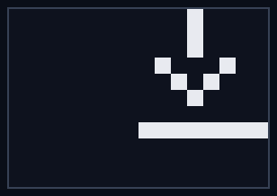
| アイコン | 意味 |
|---|---|
| SDカード型アイコン | SDカードへの保存中。表示中は電源を切らないでください(書き込み中の電源断については「Appendix E-3」参照)。 |
| 下向き矢印アイコン | Undo用データの読み込み中("undo data loading")。消えるまでUndoやトラッククリア、録音開始などの操作は行えません(「6-3-1. トラック録音のUndo/Redo」「Appendix E-6」参照)。 |
C-2. トースト通知
再生/停止やUndo、トラックのクリア操作時に、画面中央へ約1秒間、操作内容が小さく表示されます(トースト)。操作が受け付けられたことの確認表示です。
| 表示 | タイミング |
|---|---|
| START | 再生を開始したとき |
| STOP | 再生を停止したとき |
| UNDO | Undo/Redoが適用されたとき(操作がブロックされた場合は表示されません) |
| CLEAR TRKn | CLEAR+T1〜T4でトラックを個別クリアしたとき(nはトラック番号1〜4。同期中などでクリアが保留された場合は表示されません) |
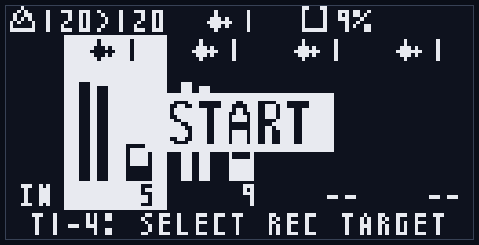
Appendix D. モード別禁止操作一覧
操作のブロックには、(A) 特定のモードでのみ禁止されるものと、(B) 状態に応じて全モード共通で禁止されるものがあります。警告ポップアップは数秒で自動的に消えます。
(A) モード固有の禁止操作
通常モード / トラック編集モード / システム設定モード: モード固有の禁止操作はありません((B)の共通ブロックのみ)。なお T1-T4 の役割はモードで異なります(通常=録音ターゲット選択、トラック編集・システム設定=カーソル/値変更)。
ループセット選択モード: 取り違えや読み込み・切替との競合を防ぐため、一部の操作が制限されます。
| 操作 | 挙動 | 画面表示 |
|---|---|---|
| REC(録音) / 外部RECトリガー | 新規録音は禁止。ただし別トラックが録音中のときは、その録音の停止のみ可能 | "REC BLOCKED"(読み込み中は "LOADING") |
| CLEAR+Tn(トラック個別クリア) | 禁止 | "CLEAR BLOCKED / loop select" |
| FUNC+CLEAR(Undo) | 禁止 | "UNDO BLOCKED" |
| CLEAR+LOOP(ループセット全クリア) | 禁止 | "CLEAR BLOCKED / loop select" |
| T4 | 未使用(無反応) | — |
| 読み込み中(T3でLOAD実行中)の操作全般 | FUNC+START 以外は受け付けない | "LOADING / Please wait..." |
| 切替確定後(T3でCHNG/NEW後・適用待ち)の T1/T2/T3 | 無反応(対象ループセットを固定)。LOOP または FUNC で抜けると取り消し | — |
ループセット選択モードは「選択専用」です。録音の新規開始・クリア・Undo などの編集操作はできません(再生/停止(START)とトラック編集モードへの遷移(FUNC+Tn)は可能です)。ただし別のトラックが録音中のままこのモードに入っているときは、その録音の停止だけはREC / 外部REC / MIDIで行えます(この間、START単押しは録音をオーバーダブに変えないよう無反応になります)。
(B) 状態による操作ブロック(全モード共通)
| 操作 | ブロックされる条件 | 画面表示 |
|---|---|---|
| オーバーダブ開始(REC / FUNC+REC / 録音中のSTART / 外部REC / MIDI) (ver 2) | 対象トラックのシンクタイプがSTRETCH | "OD BLOCKED / stretch track: bounce first" |
| LOOP / LOOP+Tn(ループセット選択へ入る) | SDが使えない | "LOOP BLOCKED / No SD" |
| LOOP(ベース選択) | 録音/オーバーダブ中(録音ターゲット基準) | "LOOP BLOCKED / Recording..." |
| LOOP+Tn(トラック選択) | 対象トラック自身が録音/オーバーダブ中 | "LOOP BLOCKED / Recording..." |
| CLEAR+LOOP(ループセット全クリア) | SDが使えない | "CLEAR BLOCKED / No SD" |
| 〃 | 録音/オーバーダブ中 | "CLEAR BLOCKED / Recording..." |
| 〃 | Undoデータの同期中 | "SYNCING / undo data loading..." |
| 〃 | 保存/読み込み/スキャン中 | "CLEAR BLOCKED / Busy..." |
| 外部RECトリガー | 確認ポップアップ中・起動時のループ読み込み中 | (無反応) |
補足
- solo CLEAR は全モードで無反応です(誤操作防止。CLEAR は他ボタンと組み合わせて使います)。
- 確認ポップアップ表示中は、T3(OK) / T4(CANCEL) 以外のボタンを受け付けません。
- FUNC+LOOP(システム設定へ)は録音中でも可能です(録音/オーバーダブでブロックされうるのはループセット選択への遷移だけで、ベース選択は録音ターゲット基準でブロックされ、トラック選択は対象トラック自身が録音中のときに限られます)。
Appendix E. トラブルシューティング
画面に表示される主な警告と対処方法です。警告ポップアップは数秒で自動的に消えます。
E-1. NO SD/MMC
起動時に "NO SD/MMC"("Disabled: save,load,loop")と表示される状態です。SDカードが使えないため、保存・読み込み・ループセット操作が無効になります。
- 原因: SDカードが挿入されていない・正しく挿さっていない、フォーマットが非対応、またはカードの故障。
- 対処:
- 電源を切り、SDカードがスロットに正しく挿さっているか確認します。
- PCでカードを開き、FAT32(32GB以下)でフォーマットされているか確認します。
- 改善しない場合は、動作確認済みのSDカード(11-1)に交換してください。
- この状態でも録音・再生はできますが(RAM上)、電源を切ると録音内容は保存されず失われます。
E-2. DATA BROKEN
ループセットの読み込み時に "DATA BROKEN" と表示される状態です。保存データの一部が壊れていることを示します。
- 原因: 保存中の電源断や、SDカードの不良・抜き差しによるファイル破損。
- 挙動: 壊れたトラックは空の状態で読み込まれます("loaded empty")。壊れていないトラックや他のループセットはそのまま使えます。
- 対処:
- 該当トラックを録音し直すと、新しいデータで上書き保存され回復します。
- 繰り返し発生する場合はカードの不良が疑われるため、別のカードに交換してください。
- 本機は各トラックを2世代(A/B)で保存しており、片方が壊れてももう片方から復旧します。両方が壊れた場合のみ空読み込みになります。
E-3. 書き込み中の電源断
SDカードへの保存中(ヘッダの保存インジケータ表示中)に電源を切ると、書き込みが中断されることがあります。
- 本機は「新しいファイルを書き終えてから安全に切り替える」方式で保存するため、書き込み途中で電源が切れても以前の録音は保たれます(中途半端なファイルは次回起動時に無視されます)。
- ただし、保存中だった最新の録音は失われることがあります。
- 対処: 録音停止直後は保存中のことが多いため、保存インジケータが消えてから電源を切ることを推奨します。
E-4. SAVE ERROR
保存時に "SAVE ERROR"("SD write failed")と表示される状態です。SDカードへの書き込みに失敗しています。
- 原因: SDカードの書き込み禁止(ロック)、空き容量不足、カードの不良・接触不良。
- 対処: カードのロック、空き容量、挿し込みを確認します。改善しない場合は別のカードに交換してください。
E-5. REC STOPPED（Memory is full!）
録音中に "REC STOPPED / Memory is full!" と表示され、録音が自動停止する状態です。
- 原因: トラックの録音可能な長さの上限(約20秒)に達したため、その時点で録音を自動停止します。
- これはある意味正常な挙動です。録音された長さが望ましくない場合は、より短い長さで録り直してください。
E-6. 「◯◯ BLOCKED」と表示される
"REC BLOCKED" / "LOAD BLOCKED" / "LOOP BLOCKED" / "UNDO BLOCKED" / "CLEAR BLOCKED" などは、その操作が今は行えないことを知らせる通知です(誤操作・競合の防止)。故障ではありません。
- 録音中、保存・読み込み中(Busy)、SD利用不可などの条件が解消されると操作できます。
- 起動直後やループセット切替の直後は、Undo用データの読み込み("SYNCING / undo data loading")のため、数秒間 Undo できないことがあります。表示が消えてから操作してください。
- どの操作がどのモードで禁止されるかは Appendix D を参照してください。
E-7. 起動に時間がかかる / フリーズしているように見える
- サンプルインポートの実行中は、起動時に "IMPORTING" 表示で時間がかかることがあります(大きなファイルや高いサンプリングレートのファイルほど時間がかかります)。
- 故障ではありません。表示が消えて通常起動するまでお待ちください(処理中に電源を切らないでください)。
E-8. サンプルインポートが反映されない
import.csv を置いて起動したのに取り込まれない場合は、次を確認してください。
- 起動後にSDカードを開き、
import.csvが_import.csvにリネームされているか確認します。各行の最終列(result)にOKまたはERROR: ...が記録されています。 - エラーの理由はルートの
lr_log.txtにも記録されます。 - よくある原因: WAVが
samples/フォルダ内に無い、対応外のフォーマット/サンプリングレート、steps・beats・bpmのいずれも未指定、ステップ数に対しWAVが短すぎる(過密)、ループ長の上限(約20秒)超過、ファイル名に非対応文字。 - 詳細はセクション12を参照してください。
E-9. OD BLOCKED (stretch track) と表示される (ver 2)
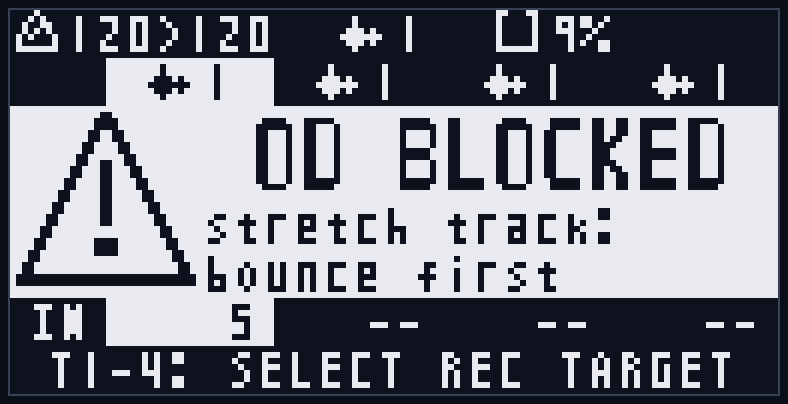
シンクタイプがSTRETCHのトラックにオーバーダブを開始しようとした状態です。STRETCHのトラックはオーバーダブできません(「8-4. 制約と使いどころ」参照)。故障ではありません。
- 対処1: 録音ソースを使って音を確定してから重ねます(リサンプル。「4-11」参照)。
- 対処2: トラック編集モードでシンクタイプをVARIに戻すと、オーバーダブできるようになります。
Appendix F. SDカードのファイル構成
SDカードのルートと、本体が管理する LILACREP フォルダの構成は以下のとおりです。
SDカードのルート/
├── LILACREP/ 本体が自動管理(手動で編集・削除しない)
│ ├── CONF_A.DAT CONF_B.DAT システム設定 (2世代ペア)
│ ├── STAT_A.DAT STAT_B.DAT 各トラックが最後に選択していたループセット番号 (2世代ペア)
│ └── LOOPS/
│ ├── 1/ ループセット1
│ │ ├── T1A.WAV T1B.WAV トラック1 (A/B 2世代ペア)
│ │ ├── T2A.WAV T2B.WAV トラック2
│ │ ├── T3A.WAV T3B.WAV トラック3
│ │ └── T4A.WAV T4B.WAV トラック4
│ ├── 2/ ループセット2
│ │ └── ...
│ └── 128/ (録音したループセットの番号のみ作成)
│
├── samples/ サンプルインポート元 (ユーザーが配置)
│ ├── drums.wav
│ └── ...
├── import.csv インポート指示 (処理後 _import.csv にリネーム)
├── _import.csv インポート結果の記録
├── lr_log.txt インポートのエラーログ
└── lr_v2_0.bin ファームウェア更新ファイル (更新後は削除推奨)LILACREP フォルダ(本体が管理):
- 本体が録音と設定の保存に使う領域です。中身を手動で編集・削除すると保存データが壊れる場合があるため、通常は触らないでください。
- CONF_A.DAT / CONF_B.DAT (ver 2): システム設定(システム設定モードの全項目とFXマクロプリセット)。バイナリ形式の2世代ペアで、書き込み中の電源断があっても片方から復旧します。ユーザーが編集するファイルではありません。
- STAT_A.DAT / STAT_B.DAT (ver 2): 各トラックが最後に選択していたループセット番号(トラック別)。次回起動時に各トラックがこのループセットを読み込みます。同じくバイナリ形式の2世代ペアです。
- ver1 の CONFIG.INI / STATE.INI は、ver2 の初回起動で内容が移行されたあと削除されます(「11-3」参照)。
- LOOPS/{番号}/: ループセット(1-128)ごとのフォルダ。録音したループセットの番号のフォルダだけが作成されます。
- T{n}A.WAV / T{n}B.WAV: トラック n(1-4)の録音データ。A/B は2世代のペアで、世代の新しい方が現在のテイク、古い方が Undo の戻り先です(11-2 参照)。48kHz / ステレオ / 32bit float の WAV 形式で、PC でも再生できます(編集・上書きは避けてください)。録音時のテンポを示す BPM 情報(ACID チャンク)も埋め込まれているため、対応する DAW で読み取れます。ver2 ではメタ情報にピッチ・シンクタイプ・録音ソース・FX設定が加わりましたが、音声データの形式は変わらず、PC での再生互換は保たれています(このメタ情報は ver1 ファームウェアでは読めません。「11-3」参照)。
ルート直下のファイル:
- samples/: サンプルインポートで取り込む WAV を置くフォルダ(セクション12)。
- import.csv / _import.csv / lr_log.txt: サンプルインポートの指示・結果・エラーログ(セクション12)。
- lr_v2_0.bin など: ファームウェアアップデート用のバイナリ(Appendix A)。アップデート後は削除を推奨します。
Appendix G. MIDIインプリメンテーション
MIDIによる送受信には別売のMIDI拡張モジュール(MIDI CoM+)が必要です。クロック・トランスポート(Clock / Start / Stop / Song Position)はMIDIチャンネルを持たないシステムメッセージのため、チャンネル設定の影響を受けません。ノートおよびCCは、システム設定の MIDI Global Ch / MIDI Track1〜4 Ch(「7-4」「10-4」〜「10-6」)で受信チャンネルを指定します。
G-1. MIDIインプリメンテーションチャート
LilaC Repeater (+ MIDI CoM+) / Version 2.0
| 機能 (Function) | 送信 (Transmitted) | 受信 (Recognized) | 備考 (Remarks) |
|---|---|---|---|
| Basic Channel 既定 | × | 設定値 | クロック/トランスポートはチャンネル無し |
| 変更 | × | 1〜16 | MIDI Global Ch / MIDI Track1〜4 Ch で指定 |
| Mode | × | × | モードメッセージ非対応(OMNI/Mono/Poly) |
| Note Number | × | 0〜127 | リモート制御(10-4)・ステップ操作(ジャンプ/スタッター。10-5) |
| True Voice | × | × | 発音はしない(操作用) |
| Velocity Note On | × | ○ | ベロシティ>0 を Note On、0 を Note Off 扱い |
| Note Off | × | × | ベロシティは参照しない |
| After Touch Key/Ch | × | × | |
| Pitch Bend | × | ○ | ピッチ操作(「8-3」)。範囲は Bend Range 設定(1〜48半音)。グローバルCh=リモート対象規則 / トラックCh=該当トラック |
| Control Change #7, #8, #90, #91 | × | ○ | DRY/FDBK レベル・FXマクロ(G-2、グローバルCh) |
| #3, #7, #9, #10, #12〜#15, #16〜#49, #90, #91 | × | ○ | トラック再生パラメータ・FXパラメータ・FXマクロ(G-2、トラックCh) |
| #99, #98, #6, #38 (NRPN) | ○ ※4 | ○ | 外部スケール入出力(G-4)。受信は Quant=EXT のとき・グローバルCh |
| Program Change | × | ○ | ループセット切替(10-7)。Program 0〜127 → ループセット1〜128。グローバルCh=全トラック / トラックCh=該当トラック |
| System Exclusive | × | × | 動作に使わず、チェインへも転送しない(他のメッセージの転送は ※3) |
| System Common Song Pos | ○ ※1 | ○ | 受信は位置0のみ(再生位置リセット) |
| Song Sel / Tune | × | × | |
| System Real Time Clock | ○ ※2 | ○ | 24ppqn |
| Commands | ○ (Start/Stop) | ○ (Start/Continue/Stop) | 送信は Start/Stop のみ(Continue は送信しない) |
| Aux All Notes Off / Active Sense / Reset / Local | × | × |
○=対応 / ×=非対応
※1 Song Position は、再生中に全トラックの再生位置をリセットしたとき(MIDIリモートの「B(リセット)」、RST入力、FUNC+START 等)に位置0(SPP0)を送信します。
※2 MIDIクロックの送信タイミングはシステム設定「Send MIDI CLK」に従います(PLAY=再生中のみ/ALWAYS=常時。「10-3-2」)。送信は MIDI Sync 設定で TX が有効なときに行われます(「10-3-3」)。
※3 受信したチャンネルメッセージ(ノート/CC等)は、SysEx を除き UART チェインの下流へ転送されます(「13. UARTチェイン」)。転送バッファが逼迫した場合はメッセージ単位で間引かれます(バイト単位で欠けることはありません)。
※4 本体でスケール/Rotを変更したときに、MIDI Global Ch へ NRPN(スケール情報)を送信します(「8-2」「G-4」)。MIDI Global Ch が "--" のときは送信しません。
G-2. コントロールチェンジ(CC)割り当て
グローバルチャンネル(MIDI Global Ch) — 全体レベルとFXマクロ(「10-6」)。
| CC番号 | 機能 | 値の対応 |
|---|---|---|
| #7 (Volume) | DRYレベル | 0(最小)〜127(最大) |
| #8 (Balance) | FDBKレベル | 0(最小)〜127(最大) |
| #90 | FXマクロのプリセット選択 | 16刻みでプリセット1〜8(「9-7」) |
| #91 | FXマクロの深さ | 0=解除 / 1〜127=深さ(「9-7」) |
トラックチャンネル(MIDI Track1〜4 Ch) — 各トラックの再生パラメータ(「10-6」)。
| CC番号 | 機能 | 値の対応 |
|---|---|---|
| #7 (Volume) | トラック再生レベル | 0(最小)〜127(最大) |
| #9 | 再生方向 | 64以上=順方向(FWD)/ 64未満=逆方向(REV) |
| #10 (Pan) | パン | 0=左端 / 64=センター / 127=右端 |
| #3 | 録音ソース | 0〜21=DRY / 22〜42=D_L / 43〜63=D_R / 64〜85=TRK / 86〜106=ALL / 107〜127=SLF |
| #12 | Loop Start(ループ範囲の開始) | 値=開始ステップ(録音長でクランプ) |
| #13 | Loop Length(ループ範囲の長さ) | 値+1ステップ / 127=録音全体 |
| #14 | 再生速度(VARI)/ピッチ(STRETCH) | VARI: 43未満=x0.5 / 86以上=x2.0 / それ以外=x1.0。STRETCH: 0〜127 → −24〜+24半音(リニア、63〜65=0) |
| #15 | ステップコントロール | 43未満=ONE / 43〜85=--(無効) / 86〜106=LOOP / 107以上=STUT |
| #16〜#49 | FXパラメータ | 下表参照 |
| #90 / #91 | FXマクロ(プリセット選択/深さ) | グローバルChと同じ値の対応。そのトラックのみに作用 |
FXパラメータCC(トラックチャンネル、CC#16〜#49) — FXページの各パラメータに1つのCCが割り当てられています(「9. エフェクト」)。
| CC番号 | パラメータ | 値の対応 |
|---|---|---|
| #16 | FLT.ON | 0〜63=OFF / 64〜127=ON |
| #17 | FLT.TYP | 0〜21=LP / 22〜63=HP / 64〜105=BP / 106〜127=NOTCH |
| #18 | CUTOFF | 0〜127 連続 |
| #19 | RESO | 0〜127 連続 |
| #20 | (予約) | 無効 |
| #21 | DRV | 0〜127 連続 |
| #22 | CRUSH | 0〜127 連続 |
| #23 | DEPTH (TAPE) | 0〜127 連続 |
| #24 | DRV.TYP | 0〜15=SOFT / 16〜47=TANH / 48〜79=TUBE / 80〜111=HARD / 112〜127=FOLD |
| #25〜#29 | (予約) | 無効(将来の拡張用) |
| #30 | EF.SRC | 0〜12=SELF / 13〜38=DRY / 39〜63=T1 / 64〜88=T2 / 89〜114=T3 / 115〜127=T4 |
| #31 | LFO1.RT | SYNC時: 0〜9=1/1 / 10〜27=1/2 / 28〜45=1/4 / 46〜63=1/8 / 64〜81=1/16 / 82〜99=1/4T / 100〜117=1/8T / 118〜127=1/16T。FREE時: 0〜127 連続(0.01〜100Hz) |
| #32 | LFO1.SHP | 0〜15=TRI / 16〜47=SIN / 48〜79=SAW / 80〜111=SQR / 112〜127=S&H |
| #33 | LFO2.RT | #31と同じ |
| #34 | LFO2.SHP | #32と同じ |
| #35 | LV.SRC | 0〜21=OFF / 22〜63=EF / 64〜105=LFO1 / 106〜127=LFO2 |
| #36 | LV.DEP | 0〜127 → −100〜+100(バイポーラ) |
| #37 | PAN.SRC | #35と同じ |
| #38 | PAN.DEP | バイポーラ(#36と同じ) |
| #39 | CUT.SRC | #35と同じ |
| #40 | CUT.DEP | バイポーラ |
| #41 | CRS.SRC | #35と同じ |
| #42 | CRS.DEP | バイポーラ |
| #43 | LO.CUT | 0〜12=OFF / 13〜38=10HZ / 39〜63=20HZ / 64〜88=40HZ / 89〜114=80HZ / 115〜127=160HZ |
| #44 | LFO1.MD | 0〜63=SYNC / 64〜127=FREE |
| #45 | LFO2.MD | 0〜63=SYNC / 64〜127=FREE |
| #46 | TAPE.TYP | 0〜63=WOW / 64〜127=FLANGER |
| #47 | TAPE.LFO | 0〜31=LFO1 / 32〜95=LFO2 / 96〜127=EF |
| #48 | DRV.SRC | #35と同じ |
| #49 | DRV.DEP | バイポーラ |
補足:
- バイポーラのDEP系は0〜127を−100〜+100に対応させます。CC値63/64は約∓0.8で、CCからは厳密な0(センター)を送れません。正確に0へ戻すには本体UI(T3+T4)を使ってください。
- LFOのモード(#44/#45)を切り替えると、そのLFOのレート(#31/#33)の解釈がSYNCの8段階とFREEの連続Hzの間で切り替わります(現在の速さと等価な値へ自動換算されます)。
- #20、#25〜#29は将来のための予約枠です(送信しても効果はありません)。
G-3. ノート割り当て(リモート制御・ステップ操作)
MIDI Global Ch のノート — リモート制御(「10-4」)。ノート番号を12で割った余りで機能が決まります(白鍵=操作、黒鍵=対象トラック指定の修飾)。
| 鍵 | 機能 |
|---|---|
| C / D | 再生方向 REV / FWD |
| E / F / G | 再生速度 x0.5 / x1.0 / x2.0 |
| A | 録音トリガ |
| B | 再生位置リセット(押している間先頭へ固定) |
| C# | 修飾=全トラック |
| D# / F# / G# / A# | 修飾=トラック1 / 2 / 3 / 4 |
MIDI Track1〜4 Ch のノート — ステップ操作(「10-5」)。「ノート番号を録音ステップ数で割った余り」で求めたステップに対し、トラック編集モードのステップコントロールに応じて再生位置を操作します(ONE / LOOP=そのステップへジャンプ、STUT=押している間その範囲をくり返し)。
ノートの割り当てはver1から変更ありません。ver2では、黒鍵による対象トラック指定(C#=全トラック、D#/F#/G#/A#=トラック1〜4)が、グローバルChで受信するピッチベンド(「8-3」)とFXマクロCC#90/#91(「9-7」)の対象決定にも使われます(黒鍵を押していないときはUndo対象トラックが対象)。
G-4. NRPNによる外部スケール入出力 (ver 2)
ピッチクオンタイズ(「8-2」)のスケールを、NRPNメッセージで外部の機器と共有できます。使用チャンネルはMIDI Global Chです(Cosmos Quencer / Trigger HaCker2 / SQTのスケール送受信と互換)。
受信(システム設定のQuant=EXTのときのみ有効):
| NRPN番号 (CC#99, CC#98) | データ (CC#6, CC#38) | 内容 |
|---|---|---|
| (1, 1) | 12bit(MSB 6bit + LSB 6bit) | スケールの構成音(bit 0=C 〜 bit 11=B)。全ビット0で外部スケールを解除(本体のスケール設定に戻る) |
| (1, 2) | 12bit | 構成音の優先度(重み付きスケール) |
| (2, 1) | データMSB | 微分音チューニング(値−64 を 1/32半音単位で加算) |
| (2, 2) | (0, 0) | 微分音チューニングのクリア |
送信: 本体でScale/Rotを変更すると、微分音クリア(2,2)→スケール構成音(1,1。Rot適用後)の順に送信します。MIDI Global Chが "--" のときは送信しません。
補足:
- RPN選択(CC#101/#100)を受信すると、NRPNの選択状態は解除されます。RPN#0(ピッチベンド・センシティビティ)には対応していません(本体のBend Range設定を使用してください)。
- グローバルChとトラックChに同じチャンネルを設定している場合、CC#38はNRPNのデータLSBとPAN.DEP(CC#38)の両方に作用します。NRPNを使う場合はチャンネルを分けることを推奨します。
保証
購入より1年間、ユーザーの意図的な改造/破壊による故障、不注意による落下などによる故障あるいは電源等コネクタの間違った接続による故障を除き、基本無償にて修理を行います。
(ただしモジュール発送時の送料はご負担いただくことがあります)
修理依頼時は購入店のレシート、もしくは購入時の明細などを証明書類としてご提出ください。
連絡先
mail: centrevillage@gmail.com
site: https://centrevillage.net